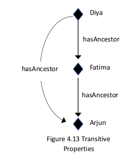

A Practical Guide to Building OWL Ontologies
Using Protégé 5.5 and Plugins
Edition 3.2
Author: Michael DeBellis
Organization: Ontomatica
Revision: 8th October, 2021
This is a revised version of the Protégé 4 Tutorial version 1.3 by Matthew Horridge. Previous versions of the tutorial were developed by Holger Knublauch , Alan Rector , Robert Stevens, Chris Wroe, Simon Jupp, Georgina Moulton, Nick Drummond, and Sebastian Brandt.
This work was conducted using the Protégé resource, which is supported by grant GM10331601 from the National Institute of General Medical Sciences of the United States National Institutes of Health.
Chapters 3-5 are based on the original tutorial. I have updated the tutorial to be consistent with Protégé 5. I have also made some changes to address some of the most common issues I’ve seen new users grapple with, to remove some of the dated information about older frame-based versions of Protégé, and various miscellaneous changes.
Chapters 6-11 are new. I have added new sections for technologies such as SWRL, SPARQL and SHACL as well as some details on concepts such as IRIs and namespaces.
Thanks to Matthew Horridge and everyone who worked on the previous tutorials. Special thanks to Lorenz Buehmann who helped me work out a thorny problem as I developed the revised example and to André Wolski for help with the SHACL plugin. Special thanks to Dick Ooms, Colin Pilkington, and Livia Pinera for their excellent detailed feedback on previous versions of the tutorial. Special thanks to Jans Aasman, Yan Xu, and everyone at Franz Inc. for their help utilizing AllegroGraph and Gruff for this tutorial and for a new tutorial available at: https://www.michaeldebellis.com/post/the-people_example-ontology
Also, thanks to everyone on the Protégé user support email list.
Note
This document may get updates frequently. It is a good idea to check my blog at: https://www.michaeldebellis.com/post/new-protege-pizza-tutorial to make sure you have the latest version.
If you have questions or comments, feel free to contact me at mdebellissf@gmail.com
1. Introduction¶
This introduces Protégé 5 for creating OWL ontologies as well as various plugins. If you have questions specific to this tutorial, please feel free to email me directly: mailto:mdebellissf@gmail.com However, if you have general questions about Protégé, OWL, or plugins you end an email to the User Support for Protégé and Web Protégé email list. This list has many people (including me) who monitor it and can contribute their knowledge to help you understand how to get the most out of this technology. To subscribe to the list, go to: https://protege.stanford.edu/support.php and click on the first orange Subscribe button. That will enable he email to send questions to.
This chapter covers licensing and describes conventions used in the tutorial. Chapter 2 covers the requirements for the tutorial and describes the Protégé user interface. Chapter 3 gives a brief overview of the OWL ontology language. Chapter 4 focuses on building an OWL ontology with classes and object properties. Chapter 4 also describes using a Description Logic Reasoner to check the consistency of the ontology and automatically compute the ontology class hierarchy.
Chapter 5 describes data properties. Chapter 6 describes design patterns and shows one design pattern: adding an order to an enumerated class. Chapter 7 describes the various concepts related to the name of an OWL entity.
Chapter 8 introduces an extended version of the Pizza tutorial developed in chapters 1-7. This ontology has a small number of instances and property values already created which can be used to illustrate the tools in the later chapters for writing rules, doing queries, and defining constraints.
Chapter 9 describes two tools for doing queries: Description Logic queries and SPARQL queries. Chapter 10 introduces the Semantic Web Rule Language (SWRL) and walks you through creating SWRL and SQWRL rules. Chapter 11 introduces the Shapes Constraint Language (SHACL) and discusses the difference between defining logical axioms in Description Logic and data integrity constraints in SHACL. Chapter 12 has some concluding thoughts and opinions and Chapter 13 provides a bibliography.
1.1. Licensing¶
This document is freely available under the Creative Commons Attribution-ShareAlike 4.0 International Public License. I typically distribute it as a PDF but if you want to make your own version send me an email and I will send you the Word version. For details on licensing see: https://creativecommons.org/licenses/by-sa/4.0/legalcode
1.2. Conventions¶
Class, property, rule, and individual names are written in Consolas font like this. The term used for any such construct in Protégé and in this document is an Entity. Individuals and classes can also be referred to as objects.
Names for user interface tabs, views, menu selections, buttons, and text entry are highlighted like this:.
Any time you see highlighted text such as File>Preferences or OK or PizzaTopping it refers to something that you should or optionally could view or enter into the user interface. If you ever aren’t sure what to do to accomplish some task look for the highlighted text. Often, as with PizzaTopping the text you enter into a field in the Protégé UI will be the name of a class, property, etc. In those cases, where the name is meant to be entered into a field it will only be highlighted rather than highlighted and printed in Consolas font.
Menu options are shown with the name of the top-level menu, followed by a > followed by the next level down to the desired selection. For example, to indicate how to open the Individuals by class tab under the Tabs section in the Window menu the following text would be used: Window>Tabs>Individuals by class.
Exercises are presented like this:
Exercise X: Accomplish this
Do this.
Then do this.
Then do this.
Warning
Potential pitfalls and warnings are presented like this.
Tip
Tips and suggestions related to using Protégé are presented like this.
Explanation
Explanations as to what things mean are presented like this.
Note
General notes are presented like this.
Vocab
Vocabulary explanations and alternative names are presented like this.
2. Requirements and the Protégé User Interface¶
In order to follow this tutorial, you must have Protégé 5, which is available from the Protégé website,1 and some of the Protégé Plugins which will be described in more detail below. For now, just make sure you have the latest version of Protégé. At the time this is being written the latest version is 5.5 although the tutorial should work for later versions as well.
The Protégé user interface is divided up into a set of major tabs. These tabs can be seen in the Window>Tabs option. This option shows all the UI tabs that are currently loaded into the Protégé environment. Any tabs that are currently opened have a check mark next to them. To see a tab that is not visible just select it from the menu and it will be added to the top with the other major tabs and its menu item will now be checked. You can add additional major tabs to your environment by loading plugins. For example, when we load the SHACL4Protégé plugin the SHACLEditor will be added to the menu.
Each major tab consists of various panes or as Protégé calls them views. Each view can be resized or closed using the icons in the top right corner of every view. The views can also be nested as sub-tabs within each major tab. When there could potentially be confusion between a tab that is a screen all its own (is under the Window>Tabs option) and a view that is a sub-tab we will call the screen tab a major tab.
There are many views that are not in the default version of Protégé that can be added via the Window>Views option. The additional views are divided into various categories such as Window>Views>Individual views. Section 5.2 will show an example of adding a new view to a major tab.
3. What are OWL Ontologies?¶
Ontologies are used to capture knowledge about some domain of interest. An ontology describes the concepts in the domain and also the relationships that hold between those concepts. Different ontology languages provide different facilities. The most recent development in standard ontology languages is OWL from the World Wide Web Consortium (W3C). A good primer on the basic concepts of OWL can be found at: https://www.w3.org/TR/owl2-primer/
OWL makes unambiguous manner based on set theory and logic. Complex concepts can be built up out of simpler concepts. The logical model allows the use of a reasoner which can check whether all of the statements and definitions in the ontology are mutually consistent and can also recognize which concepts fit under which definitions. The reasoner can therefore help to maintain the hierarchy correctly. This is particularly useful when dealing with cases where classes can have more than one parent. The reasoner can also infer additional information. For example, if two properties are inverses only one value needs to be asserted by the user and the inverse value will be automatically inferred by the reasoner.
3.1. Components of OWL Ontologies¶
An OWL ontology consists of Classes, Properties, and Individuals. OWL
ontologies are an implementation of Description Logic (DL) which is a decidable subset
of First Order Logic. A class in OWL is a set, a property is a binary
relation, and an individual is an element of a set. Other concepts
from set theory are also implemented in OWL such as Disjoint sets, the
Empty set (owl:Nothing), inverse relations, transitive relations, and many more.
An understanding of the basic concepts of set theory will help the user get the most out of OWL but is not required. One of the benefits of Protégé is that it presents an intuitive GUI that enables domain experts to define models without a background in set theory. However, developers are encouraged to refresh their knowledge on logic and set theory. A good source is the first 3 chapters in Elements of the Theory of Computation by Lewis and Papadamitrious. Another good source is the PDF document Overview of Set Theory available at: https://www.michaeldebellis.com/post/owl-theoretical-basics
3.1.1. Individuals¶
Individuals represent objects in the domain of interest. An important difference between OWL and most programming and knowledge representation languages is that OWL does not use the Unique Name Assumption (UNA). This means that two different names could actually refer to the same individual. For example, “Queen Elizabeth”, “The Queen” and “Elizabeth Windsor” might all refer to the same individual. In OWL, it must be explicitly stated that individuals are the same as each other, or different from each other. Figure 3.1 shows a representation of some individuals in a domain of people, nations, and relations — in this tutorial we represent individuals as diamonds.
Vocab
Individuals are also known as instances. Individuals can be referred to as instances of classes.
3.1.2. Properties¶
Properties are binary relations between individuals. I.e.,
properties link two individuals together. For example, the property
hasFriend might link the individual Biswanath to the individual
Michael, or the property hasChild might link the individual Michael
to the individual Oriana. Properties can have inverses. For
example, the inverse of hasChild is hasParent. Properties can be
limited to having a single value – i.e., to being functional. They
can also be transitive or symmetric. These property characteristics
are explained in detail in Section 4.8. Figure 3.2 shows a
representation of some properties.
Figure 3.3: Representation of Classes containing Individuals¶¶
Vocab
Properties are similar to properties in Object-Oriented Programming (OOP). However, there are important differences between properties in OWL and OOP. The most important difference is that OWL properties are first class entities that exist independent of classes. OOP developers are encouraged to read: https://www.w3.org/2001/sw/BestPractices/SE/ODSD/
3.1.3. Classes¶
OWL classes are sets that contain individuals. They are described
using formal (mathematical) descriptions that rigorously define the requirements for membership
of the class. For example, the class Cat would contain all the
individuals that are cats in our domain of interest. Classes may
be organized into a superclass-subclass hierarchy, which is also
known as a taxonomy. However, taxonomies are often trees. I.e.,
each node has only one parent node. Class hierarchies in OWL are
not restricted to be trees and multiple inheritance can be a
powerful tool to represent data in an intuitive manner.
Subclasses specialize (aka are subsumed by) their superclasses. For
example, consider the classes Animal and Dog – Dog might be a
subclass of Animal (so Animal is the superclass of Dog). This says
that All dogs are animals, All members of the class Dog are
members of the class Animal. OWL and Protégé provide a language
that is called Description Logic or DL for short. One
of the key features of DL is that these superclass-subclass
relationships (aka subsumption relationships) can be computed
automatically by a reasoner – more on this later. Figure 3.3 shows a
representation of some classes containing individuals – classes are
represented as ovals, like sets in Venn diagrams.
In OWL classes can be built up of descriptions that specify the conditions that must be satisfied by an individual for it to be a member of the class. How to formulate these descriptions will be explained as the tutorial progresses.
4. Building an OWL Ontology¶
This chapter describes how to create an ontology of Pizzas. We use Pizzas because it is something almost everyone is familiar with.
Exercise 1: Create a new OWL Ontology
Start Protégé. When Protégé opens for the first time each day it puts up a screen of all the available plugins. You can also bring this up at any time by using File>Check for plugins. You won’t need any plugins at this point of the tutorial so just click the Not now button.
The Protégé user-interface consists of several tabs such as Active ontology, Entities, etc. When you start Protégé you should be in the Active Ontology tab. This is for overview information about the entire ontology. Protégé always opens with a new untitled ontology you can start with. Your ontology should have an IRI something like: http://www.semanticweb.org/yourname/ontologies/2020/4/untitled-ontology-27 Edit the name of the ontology (the part after the last “/” in this case untitled-ontology-27) and change it to something like PizzaTutorial. Note: the Pizza ontology IRIs shown below (e.g., figure 4.3) show the IRI after I edited the default that Protégé generated for me. Your IRI will look different and will be based on your name or the name of your organization.
Now you want to save your new ontology. Select File>Save. This should bring up a window that says: Choose a format to use when saving the ‘PizzaTutorial’ ontology. There is a drop down menu of formats to use. The default RDF/XML Syntax should be selected by clicking the OK button. This should bring up the standard dialog your operating system uses for saving files. Navigate to the folder you want to use and then type in the file name, something like Pizza Tutorial and select Save.
Tip
As with any file you work on it is a good idea to save your work at regular intervals so that if something goes wrong you don’t lose your work. At certain points in the tutorial where saving is especially important the tutorial will prompt you to do so but it is a good idea to save your work often, not just when prompted.
The next step is to set some preferences related to the names of new
entities. Remember than in Protégé any class, individual, object
property, data property, annotation property, or rule is referred to
as an entity. The term name in OWL can actually refer to two
different concepts. It can be the last part of the IRI or it can
refer to the annotation property (usually rdfs:label) used to provide
a more user friendly name for the entity. We will discuss this in
more detail below in Chapter 7. For now, we just want to set the
parameters correctly so that future parts of the tutorial (especially
the section on SPARQL queries) will work appropriately.
Exercise 2: Set the Preferences for New Entities and Rendering
Go to File>Preferences in Protégé. This will bring up a new window with lots and lots of different tabs. Click on the New entities tab. This will bring up a tab that looks similar to figure 4.1. The top part of that tab is a box labeled Entity IRI. It should be set with the parameters as shown in figure 4.1. I.e., Starts with Active ontology IRI. Followed by #. Ends with User supplied name. If the last parameter is set to Auto-generated name change it to User supplied name. That is the parameter most likely to be different but also check the other two as well.
Now select the Renderer tab. It should look like figure 4.2. Most importantly, check that Entity rendering is set to Render by entity IRI short name (ID) rather than Render by annotation property. Don’t worry if this doesn’t completely make sense at this point. The issues here are a bit complex and subtle so we defer them until after you have an understanding of the basic concepts of what an OWL ontology is. We will have a discussion of these details below in Chapter 7. For now you just need to make sure that the preferences are set appropriately to work with the rest of the tutorial.
Exercise 3: Add a Comment Annotation to Your Ontology
Make sure you are in the Active Ontology tab. In the view just below the Ontology IRI and Ontology Version IRI fields find the Annotations option and click on the + sign. This will bring up a menu to create a new annotation on the ontology.
The rdfs:comment annotation should be highlighted by default. If it isn’t highlighted click on it. Then type a new comment into the view to the right. Something like A tutorial ontology for the Pizza domain.
Click OK. Your Active Ontology tab should like Figure 4.3.
4.1. Named Classes¶
The main building blocks of an OWL ontology are classes. In Protégé 5,
editing of classes can be done in the Entities tab. The Entities tab
has a number of sub-tabs. When you select it, the default should be
the Class hierarchy view as shown in Figure 4.5. All empty ontologies
contains one class called owl:Thing. OWL classes are sets of
individuals. The class owl:Thing is the class that represents the set
containing all individuals. Because of this all classes are subclasses
of owl:Thing.
Exercise 4: Create classes: Pizza, PizzaTopping, and PizzaBase
Navigate to the Entities tab with the Class hierarchy view selected. Make sure owl:Thing is selected.
Press the Add Subclass icon shown in figure 4.4. This button creates a new subclass of the selected class. In this case we want to create a subclass of owl:Thing.
This should bring up a dialog titled Create a new class with a field for the name of the new class. Type in Pizza and then select OK.
Repeat the previous steps to add the classes
PizzaToppingandPizzaBaseensuring thatowl:Thingis selected before using the add subclass icon so that all your classes are subclasses ofowl:Thing. Your user interface should now look like figure 4.5. Don’t worry that some of the classes are highlighted in red. That is because the reasoner hasn’t run yet. We will address this shortly.
Tip
There are no mandatory naming conventions for OWL entities. In
Chapter 7, we will discuss names and labels in more detail. A
best practice is to select one set of naming conventions and then
abide by that convention across your organization. For this
tutorial we will follow the standard where class and individual
names start with a capital letter for each word and do not
contain spaces. This is known as CamelBack notation. For example:
Pizza, PizzaTopping, etc. Also, we will follow the standard that
class names are always singular rather than plural. E.g., Pizza
rather than Pizzas, PizzaTopping rather than PizzaToppings.
4.2. Using a Reasoner¶
You may notice that one or more of your classes is highlighted in red as in Figure 4.5. This is because we haven’t run the reasoner yet so Protégé has not been able to verify that our new classes have no inconsistencies. When just creating classes and subclasses in a new ontology there is little chance of an inconsistency. However, it is a good idea to run the reasoner often. When there is an inconsistency the sooner it is discovered the easier it is to fix. One common mistake that new users make is to do a lot of development and then run the reasoner only to find that there are multiple inconsistencies which can make debugging significantly more difficult. So let’s get into the good habit of running the reasoner often.
Protégé comes with some reasoners bundled in and others available as plugins. Since we are going to write some SWRL rules later in the tutorial, we want to use the Pellet reasoner. It has the best support for SWRL at the time this tutorial is being written.
Exercise 5: Install and Run the Pellet Reasoner
Check to see if the Pellet reasoner is installed. Click on the Reasoner menu. At the bottom of the menu there will be a list of the installed reasoners such as Hermit and possibly Pellet. If Pellet is visible in that menu then select it and skip to step 3.
If Pellet is not visible then do File>Check for plugins and select Pellet from the list of available plugins and then select Install. This will install Pellet and you should get a message that says it will take effect the next time you start Protégé. Do a File>Save to save your work then quit Protégé and restart it. Then go to File>Open recent. You should see your saved Pizza tutorial in the list of recent ontologies. Select it to load it. Now you should see Pellet under the Reasoner menu and be able to select it so do so.
With Pellet selected in the Reasoner menu execute the command Reasoner>Start reasoner. The reasoner should run very quickly since the ontology is so simple. You will notice that the little text message in the lower right corner of the Protégé window has changed to now say Reasoner active. The next time you make a change to the ontology that text will change to say: Reasoner state out of sync with active ontology. With small ontologies the reasoner runs very quickly, and it is a good idea to get into the habit of running it often, as much as after every change.
It is possible that one or more of your classes will still be highlighted in red after you run the reasoner. If that happens do: Window>Refresh user interface and any red highlights should go away. Whenever your user interface seems to show something you don’t expect the first thing to do is to try this command.
One last thing we want to do is to configure the reasoner. By default, the reasoner does not perform all possible inferences because some inferences can take a long time for large and complex ontologies. In this tutorial we will always be dealing with small and simple ontologies so we want to see everything the reasoner can do. Go to: Reasoner>Configure. This will bring up a dialog with several check boxes of inferences that the reasoner can perform. If they aren’t all checked then check them all. You may receive a warning that some inferences can take a lot of time, but you can ignore those since your ontology will be small.
4.3. Disjoint Classes¶
Having added the classes Pizza, PizzaTopping, and PizzaBase to the
ontology, we now want to say that these classes are disjoint. I.e.,
no individual can be an instance of more than one of those classes. In
set theory terminology the intersection of these three classes is the
empty set: owl:Nothing.
Exercise 6: Make Pizza, PizzaTopping, and PizzaBase disjoint from each other
Select the class Pizza in the class hierarchy.
Find the Disjoint With option in the Description view and select the (+) sign next to it. See the red circle in figure 4.6.
This should bring up a dialog with two tabs: Class hierarchy and Expression editor. You want Class hierarchy for now (we will use the expression editor later). This gives you an interface to select a class that is identical to the Class hierarchy view. Use it to navigate to PizzaBase. Hold down the shift key and select PizzaBase and PizzaTopping. Select OK.
Do a Reasoner>Synchronize reasoner. Then look at
PizzaBaseandPizzaTopping. You should see that they each have the appropriate disjoint axioms defined to indicate that each of these classes is disjoint with the other two.
Figure 4.6: The Disjoint Option in the Class Description View¶¶
Explanation
OWL classes are assumed to overlap, i.e., by default they are not disjoint. This is often useful because in OWL, unlike in most object-oriented models, multiple inheritance is not discouraged and can be a powerful tool to model data. If we want classes to be disjoint, we must explicitly declare them to be so. It is often a good development strategy to start with classes that are not disjoint and then make them disjoint once the model is more fully fleshed out as it is not always obvious which classes are disjoint from the beginning.
4.4. Using Create Class Hierarchy¶
In this section we will use Tools>Create class hierarchy to create multiple classes at once.
Exercise 7: Use the Create class hierarchy tool to create subclasses of PizzaBase
Select the class PizzaBase in the class hierarchy.
With PizzaBase selected use the Tools>Create class hierarchy menu option.
This should bring up a wizard that enables you to create a nested group of classes all at once. You should see a window labeled Enter hierarchy where you can enter one name on each line. You can also use the tab key to indicate that a class is a subclass of the class above it. For now we just want to enter two subclasses of
PizzaBase:ThinAndCrispyBaseandDeepPanBase. One of the things the wizard does is to automatically add a prefix or suffix for us. So just enter ThinAndCrispy, hit return and enter DeepPan. Then in the Suffix field add Base. Your window should look like figure 4.7.Select Continue. This will take you to a window that asks if you want to make sibling classes disjoint. The default should be checked (make them disjoint) which is what we want in this case (a base can’t be both deep pan and thin) so just select Finish. Synchronize the reasoner. Your class hierarchy should now look like figure 4.8.
4.5. Create a PizzaTopping Hierarchy¶
We will use Tools>Create class hierarchy again but this time to create
a more interesting hierarchy with additional subclasses to model the
subclasses of PizzaTopping.
Exercise 8: Create subclasses of PizzaTopping
Select the class PizzaTopping in the class hierarchy.
With PizzaTopping selected use the Tools>Create class hierarchy menu option.
This will once again bring up the wizard. We want all our toppings to end in Topping so enter Topping in the Suffix field. Then create the nested structure as shown in figure 4.9. Use the Tab key to indent classes where needed.
Select Continue. This will take you to the window that asks if you want to make sibling classes disjoint. We do want this so leave the box checked and click Finish. Synchronize the reasoner. Your class hierarchy should now look like figure 4.10.
Figure 4.9 Using Create class hierarchy to create PizzaTopping subclasses¶¶
Explanation
So far, we have created some simple named classes and
subclasses which hopefully seem intuitive and obvious. However,
what does it actually mean to be a subclass of something in
OWL? For example, what does it mean for VegetableTopping to be
a subclass of PizzaTopping? In OWL subclass means necessary implication.
I.e., if VegetableTopping is a subclass of PizzaTopping then
all instances of VegetableTopping are also instances of
PizzaTopping. It is for this reason that we try to have
standards such as having all
PizzaTopping classes end with the word “Topping”. Otherwise, it
might seem we are saying that anything that is a kind of Ham
like the Ham in your sandwich is a kind of MeatTopping or
PizzaTopping which is not what we mean. For large ontologies
strict attention to the naming of classes and other entities
can prevent potential confusion and bugs.
4.6. OWL Properties¶
OWL Properties represent relationships. There are three types of properties, Object properties, Data properties and Annotation properties. Object properties are relationships between two individuals. Data properties are relations between an individual and a datatype such as xsd:string or xsd:dateTime.
Annotation properties also usually have datatypes as values although
they can have objects. An
annotation property is usually meta-data such as a comment or a label.
In OWL only individuals can have values for object and data
properties, but any entity can have an annotation property value since
meta-data applies to all entities. Annotation properties usually can’t
be reasoned about. For example, SWRL rules which we will cover later
cannot view or change the value of annotation properties. In this
chapter we will focus on Object properties. Data properties are
described in Chapter 5. In the current version of the tutorial we are
only discussing the annotation property rdfs:label (see Chapter 7)
however they are fairly intuitive.
Properties may be created using the Object Properties sub-tab of the Entities tab shown in figure 4.11.
Just as all OWL classes ultimately are a subclass of owl:Thing, all
properties are ultimately a sub-property of owl:topObjectProperty. A
sub-property is similar to a subclass except it is about the tuples in a
property. For example, hasFather would be a sub-property of hasParent
because all the tuples in hasFather are in hasParent but not vice versa.
E.g., if Sasha hasFather Barack then she also hasParent Barack. However,
she also hasParent Michelle but it is not the case that she
hasFather Michelle. Rather she hasMother Michelle, i.e., hasMother is also
a sub-property of hasParent.
The GUI for entering properties is also similar to that for entering classes. The first icon with one box under another creates a sub-property of the selected property. The second icon showing two boxes at the same level creates a sibling property to the selected property and the icon with an X through a box deletes the selected property.
Exercise 9: Create some properties
Select the Object properties sub-tab of the Entities tab (see figure 4.11).
Make sure
owl:topObjectPropertyis selected. Click on the nested box icon at the left to create a new sub-property ofowl:topObjectProperty. When prompted for the name of the new property type in hasIngredient.Just as you can use a wizard to create multiple classes you can also use one to create multiple properties. Select hasIngredient and then select Tools>Create object property hierarchy. Enter the new property names hasTopping and hasBase. Select Continue and accept the default that the object properties are not disjoint.
Synchronize the reasoner. Your window should now look like figure 4.11.
Explanation
For those familiar with the Entity-Relationship model, OWL object properties are similar to relations and data properties are similar to attributes. Object properties are similar to properties with a range of some class in OOP and data properties are similar to OOP properties with a range that is a datatype.
4.7. Inverse Properties¶
Each object property may have a corresponding inverse property. If
some property links individual a to individual b then its inverse
property will link individual b to individual a. For example, in
figure 3.3 the individual MichaelhasPetBuddy. In this example hasPet
is an object property that maps from a Person to their Pet which are
known as the domain and range of the property. Michael is an instance
of the Person class and Buddy is an instance of the Pet class. The
hasPet property points from a Person to that person’s Pet. The inverse
property could be isPetOf which would be represented by a link between
the two individuals going the other way, from Buddy to Michael.
Whenever possible it is desirable to adhere to this type of naming
standard with properties. Properties going in one direction as
hasProperty and their inverses as isPropertyOf.
Exercise 10: Create some inverse properties
Use the Object properties tab to create a new object property called
isIngredientOf(this will be the inverse property ofhasIngredient). Make sure thatisIngredientOfis a sibling property ifhasIngredientand a sub-property ofowl:topObjectProperty.Click on the Add icon (+) next to Inverse Of in the Description view for
hasIngredient. You will be presented with a window that shows a nested view of all the current properties. Select hasIngredient to make it the inverse ofisIngredientOf.Select isIngredientOf and then Tools>Create object property hierarchy. Enter isToppingOf then on a new line enter isBaseOf. As before, select Continue and leave the box for disjoint properties unchecked and select Finish. Repeat step 2 to make
isToppingOfthe inverse ofhasToppingandisBaseOfthe inverse ofhasBase.Synchronize the reasoner. Your window should now look like figure 4.12.
4.8. OWL Object Property Characteristics¶
OWL allows the meaning of properties to be enriched through the use of property characteristics. The following sections discuss the various characteristics that properties may have. If you are familiar with basic concepts of relations in set theory these characteristics will already be familiar to you. In figure 4.12 you can see the Characteristics: view for a property as a list of check boxes: Functional, Inverse functional, Transitive, etc.
4.8.1. Functional Properties¶
If a property is functional, for a given individual, there can be at
most one individual that is related to the individual via the
property. For example the property hasBirthMother – someone can only
have one birth mother. If we say that the individual
Jean hasBirthMother Peggy and we also say that the individual
Jean hasBirthMother Margaret, then because hasBirthMother is a
functional property, we can infer that Peggy and Margaret must be the
same individual. This can happen in OWL because unlike many languages it does not have a unique names assumption. Unless
specifically stated otherwise, the reasoner can infer that two
individuals with different names are actually the same individual. It
should be noted however, that if Peggy and Margaret were explicitly
stated to be two different individuals then the above statements would
lead the reasoner to infer that there was an inconsistency in the
ontology. We will discuss names more in Chapter 7.
In section 4.16 we will discuss cardinality restrictions on properties.
E.g., that the hasWheel property of the Bicycle class has a minimum of 2
(allowing for training wheels) whereas hasWheel for the Unicycle class
is defined to be exactly 1. A functional property is equivalent to a
property with a cardinality restriction that says it has a maximum of 1
value. The term functional is from mathematics where a function is
defined as a relation where each member of the domain has at most one
value. For example, the greaterThan relation is not functional since for
any number X many (in fact an infinite number) can be greaterThan X but
the plusOne relation is functional since for any number X plusOne always
results in one unique value.
4.8.2. Inverse Functional Properties¶
If a property is inverse functional then it means that the inverse
property is functional. For a given individual, there can be at most
one individual related to that individual via the property. Following
our example from section 4.8.1 the inverse of hasBirthMother would be
isBirthMotherOf. The isBirthMotherOf property would not be functional
since a woman can be the birth mother of several children. However, it
would be inverse functional since each person has exactly one mother.
4.8.3. Transitive Properties¶
 Figure 4.13 Transitive Properties |
If a property P is transitive, and P relates individual a to individual b, individual b, and also individual b to individual c, then we can infer that individual a is related to individual c via property P. For example, Figure 4.13 shows an example of the transitive property
|
An example of the transitive property in mathematics is the > relation. If x > y and y > z then x > z. |
|
Note that if a property is transitive it cannot be functional. Also, if a property is transitive then its inverse property must also be transitive. E.g., the inverse of > is < and < is also transitive. We will see an example of this in Chapter 6. |
4.8.4. Symmetric and Asymmetric Properties¶
If a property P is symmetric, and the property relates individual a to
individual b then individual b is also related to individual a via
property P. The hasSibling property or hasSpouse are examples of symmetric properties.
If Michelle hasSpouse Barack, then
Barack hasSpouse Michelle. A symmetric property is its own inverse.
An asymmetric property is a property that can never have symmetric
values. If a property P is asymmetric then if a is related to b via that property b cannot be
related to a via that property. An example of an asymmetric property
is hasBirthMother. If Diya hasBirthMother Fatima, then it can’t be the
case that Fatima hasBirthMother Diya.
4.8.5. Reflexive and Irreflexive Properties¶
A reflexive property is a property that always relates an individual
to itself. If a property P is reflexive then for all individuals a P
will always relate a to a. Equality is the most common example of a
reflexive property. For any object a, a is always equal to a. An
irreflexive property is… you guessed it… a property that can never
relate an individual to itself. The property hasBirthMother is an
example of an irreflexive property since no person can be their own
mother. You should use reflexive properties with care.
The domain of a reflexive property is always owl:Thing. The reasons are
complex, see the W3C Owl 2 Specification in the bibliography for more
details. The important thing is that if you make a property reflexive
that means its domain is owl:Thing. For example, if you have a
reflexive property and declare its domain to be some class such as
Person the reasoner will infer that Person is equivalent to owl:Thing
which can cause problems.
4.8.6. Reasoners Automatically Enforce Property Characteristics¶
The reasoners that work with Protégé automatically enforce all the
characteristics that are described above. For example, if the user
enters the fact that Diya hasBirthMother Fatima and isBirthMotherOf
is the inverse of hasBirthMother, the reasoner will
infer that Fatima isBirthMotherOf Diya. These types of characteristics
can significantly reduce the amount of effort needed to populate an
ontology with data about individuals.
4.9. OWL Property Domains and Ranges¶
Properties may have a domain and range defined. These terms have
the same meaning in OWL as they do in mathematics and set theory. The
domain of a property is the set of all objects that can have that
property asserted about it. The range is the set of all objects that
can be the value of the property. Both the domain and range are
optional. In general, it is a good idea to define them because doing
so can catch modeling mistakes while defining the model rather than at
run time when trying to use it.
The domain for an object property must
always be a class. For data properties the range is a simple datatype
such as xsd:decimal. The most common predefined datatypes already
exist in Protégé. It is also possible to define new data types
although most users will seldom need to do that. For most cases if you
are considering defining a new datatype you should probably consider
making the property an object property instead and defining a class as
the range. For people familiar with Entity-Relation modeling an object
property is similar to a relation and a data property is similar to an
attribute. For those familiar with set theory a property is identical
to a binary relation in set theory.
As an example, in our pizza ontology, the property hasTopping would link
individuals belonging to the class Pizza to individuals belonging to the
class PizzaTopping. The domain of hasTopping is Pizza and the range is
PizzaTopping. Inverse properties have their domains and range swapped.
In this example, the inverse of hasTopping will be called isToppingOf.
Thus, the domain for isToppingOf is the range of hasTopping
(PizzaTopping) and the range for isToppingOf is the domain of hasTopping
(Pizza).
Exercise 11: Define the domain and range of the hasTopping property
Navigate to the Object properties tab. Select the hasTopping property.
Click on the Add icon (+) next to Domains (intersection) in the Description view for
hasTopping. You will be presented with a window that shows several tabs. There are multiple ways to define domain and range. For now we will use the simplest method (and the one most often used). Select the ClassHierarchy tab. Then select Pizza from the class hierarchy. Your UI should look like figure 4.14. Click on OK. You should now see Pizza underneath the Domains in the Description view.Repeat step 2 but this time start by using the (+) icon next to the Ranges (intersection) in the Description for
hasTopping. This time select the class PizzaTopping as the range.Synchronize the reasoner. Now select isToppingOf. You should see that the Domain and Range for
isToppingOfhave been filled in by the reasoner (see figure 4.15). Since the two properties are inverses the reasoner knows that the domain for one is the range for the other and vice versa. This is another example of why frequently running the reasoner can save time and help maintain a valid model. Note that these values are highlighted in yellow. Any information supplied by the reasoner rather than by the user is highlighted in this way.
Warning
It is possible to specify more than one class as the domain or
range of a property. One of the most common mistakes of new
users is to do this and expect that the resulting domain/range
is the union of the two classes. However, note that next to the
Domain and Range in the
Description view it says (intersection). This is because the
semantics of having 2 or more classes as the domain or range is
the intersection of those classes not the union. E.g., if
one defined the domain for a property to be Pizza and then
added another domain IceCream that would mean that for
something to be in the domain of that property it would have to
be an instance of both Pizza and IceCream not (as people
often expect) the union of those two sets which would be
either the class Pizza or the class IceCream. Also, note
that the domain and range are for inferencing, they are not
data integrity constraints. This distinction will be explained
in more detail below in the section on SHACL.
Exercise 12: Define the domain and range for the hasBase property
Now we are going to repeat the same activities as in the previous exercise but for another property:
hasBase. Make sure you are still on the Object properties tab. Select the hasBase property.Click on the Add icon (+) next to Domains (intersection) in the Description view for
hasBase. Select the ClassHierarchy tab. Then select Pizza from the class hierarchy.Repeat step 2 but this time start by using the (+) icon next to the Ranges (intersection) in the Description for hasBase. This time select the class PizzaBase as the range.
4. Synchronize the reasoner. Now select isBaseOf You should see that the
Domain and Range for isBaseOf have been filled in by the reasoner.
4.10. Describing and Defining Classes¶
Now that we have defined some properties, we can use these properties to define some more interesting classes. There are 3 types of classes in OWL:
Primitive classes. These are classes that are defined by conditions that are necessary (but not sufficient) to hold for any individuals that are instances of that class or its subclasses. The condition may be as simple as: Class A is a subclass of class B. To start with we will define primitive classes first and then defined classes. When the reasoner encounters an individual that is an instance of a primitive class it infers that all the conditions defined for that class must hold for that individual.
Defined classes. These are classes that are defined by both necessary and sufficient conditions. When the reasoner encounters an individual that satisfies all the conditions for a defined class it will make the inference that the individual is an instance of that class. The reasoner can also use the conditions defined on classes to change the class hierarchy, e.g., to infer that Class A is a subclass of Class B. We will see examples of this later in the tutorial.
Anonymous classes. These are classes that you won’t encounter much and that won’t be discussed much in this tutorial, but it is good to know about them. They are created by the reasoner when you use class expressions. For example, if you define the range of a property to be
PizzaToppingorPizzaBasethen the reasoner will create an anonymous class representing the intersection of those two classes.
4.10.1. Property restrictions¶
In OWL properties define binary relations with the same semantics and
characteristics as binary relations in First Order Logic. There are
two types of OWL properties for describing a domain: Object properties
and Data properties. Object properties have classes as their domain
and range. Data properties have classes as their domain and simple
datatypes such as xsd:string or xsd:dateTime as their range. In figure
3.3 the individual Michael is related to the individual USA by the
property livesIn. Consider all the individuals who are an instance of
Person and also have the same relation, that each livesIn the USA.
This group is a set or OWL class such as USAResidents. In OWL a class
can be defined by describing the various properties and values that
hold for all individuals in the class. Such definitions are called
restrictions in OWL.
The following are some examples of classes of individuals that we might want to define via property restrictions:
The class of individuals with at least one
hasChildrelation.The class of individuals with 2 or more
hasChildrelations.The class of individuals that have at least one
hasToppingrelationship to individuals that are members ofMozzarellaTopping– i.e. the class of things that have at least a mozzarella topping.The class of individuals that are
Pizzasand only havehasToppingrelations to instances of the classVegetableTopping(i.e.,VegetarianPizza).
In OWL we can describe all of the above classes using restrictions. OWL restrictions fall into three main categories:
Quantifier restrictions. These describe that a property must have some or all values that are of a particular class.
Cardinality restrictions. These describe the number of individuals that must be related to a class by a specific property.
hasValue restrictions. These describe specific values that a property must have.
We will initially use quantifier restrictions. Quantifier restrictions can be further categorized as existential restrictions and universal restrictions6. Both types of restrictions will be illustrated with examples in this tutorial.
Existential restrictions describe classes of individuals that participate in at least one relation along a specified property. For example, the class of individuals who have at least one (or some)
hasToppingrelation to instances ofVegetableTopping. In OWL the keyword some is used to denote existential restrictions.Universal restrictions describe classes of individuals that for a given property only have relations along a property to individuals that are members of a specific class. For example, the class of individuals that only have
hasToppingrelations to instances of the classVegetableTopping. In OWL they keyword only is used for universal restrictions.
Let’s take a closer look at an example of an existential restriction.
The restriction hasTopping some MozzarellaTopping is an existential
restriction (as indicated by the some keyword), which restricts the
hasTopping property, and has a filler MozzarellaTopping. This
restriction describes the class of individuals that have at least one
hasTopping relationship to an individual that is a member of the class
MozzarellaTopping.
Vocab
A restriction always describes a class. Sometimes (as we will soon see) it can be a defined class. Other times it may be an anonymous class. In all cases the class contains all of the individuals that satisfy the restriction, i.e., all of the individuals that have the relationships required to be a member of the class. In section 9.2 one of our SPARQL queries will return several anonymous classes.
The restrictions for a class are displayed and edited using the Class Description View shown in Figure 4.17. The Class Description View holds most of the information used to describe a class. The Class Description View is a powerful way of describing and defining classes. It is one of the most important differences between describing classes in OWL and in other models such as most object-oriented programming languages. In other models there is no formal definition that describes why one class is a subclass of another, in OWL there is. Indeed, the OWL classifier can actually redefine the class hierarchy based on the logical restrictions defined by the user. We will see an example of this later in the tutorial.
Vocab
Restrictions are also called axioms in OWL. This has the same meaning as in logic. An axiom is a logical formula defined by the user rather than deduced by the reasoner. As described above, in Protégé all axioms are shown in normal font whereas all inferences inferred by the reasoner are highlighted in yellow.
4.10.2. Existential Restrictions¶
An existential restriction describes a class of individuals that have
at least one (some) relationship along a specified property to an
individual that is a member of a specified class or datatype. For
example, hasBase some PizzaBase describes all of the individuals that
have at least one relationship along the hasBase property to an
individual that is a member of the class PizzaBase — in more natural
English, all of the individuals that have at least one pizza base.
Exercise 13: Add a restriction to Pizza that specifies a Pizza must have a PizzaBase
Select Pizza from the class hierarchy on the Classes tab.
Click on the Add icon (+) next to the SubClass Of field in the Description view for Pizza.
This will bring up a new window with several tab options to define a new restriction. Select the Object restriction creator. This tab has the Restricted property on the left and the Restriction filler on the right.
Expand the property hierarchy on the left and select hasBase as the property to restrict. Then in the Restriction filler on the right select the class PizzaBase. Finally, the Restriction type at the bottom should be set to Some (existential). This should be the default so you shouldn’t have to change anything but double check that this is the case. Your window should look like figure 4.16 now.
When your UI looks like figure 4.16 click on the OK button. That should close the window. Run the reasoner to make sure things are consistent. Your main window should now look like figure 4.17.
We have described the class Pizza to be to be a subclass of Thing and a
subclass of the things that have a base which is some kind of PizzaBase.
Notice that these are necessary conditions — if something is a Pizza it
is necessary for it to be a member of the class Thing (in OWL,
everything is a member of the class Thing) and necessary for it to
have a kind of PizzaBase. More formally, for something to be a Pizza it
is necessary for it to be in a relationship with an individual that is a
member of the class PizzaBase via the property hasBase.
4.10.3. Creating Subclasses of Pizza¶
It’s now time to add some different kinds of pizzas to our ontology.
We will start off by adding a MargheritaPizza, which is a pizza that
has toppings of mozzarella and tomato. In order to keep our ontology
tidy, we will group our different pizzas under the class NamedPizza.
Exercise 14: Create Subclasses of Pizza: NamedPizza and MargheritaPizza
Select Pizza from the class hierarchy on the Classes tab.
Click on the Add subclass icon at the top left of the Classes tab (look back at figure 4.4 if you aren’t certain). You can also move your mouse over the icons and you will see a little pop-up hint for each icon.
Protégé will prompt you for the name of the new subclass. Call it NamedPizza.
Repeat steps 1-3 this time starting with NamedPizza to create a subclass of NamedPizza. Call it MargheritaPizza.
Add a comment to the class MargheritaPizza using the Annotations view. This is above the Description view. Add the comment: A pizza that only has Mozzarella and Tomato toppings. Remember that annotation properties are meta-data that can be asserted about any entity whereas object and data properties can only be asserted about individuals. There are a few predefined annotation properties that are included in all Protégé ontologies such as the comment property.
Having created the class MargheritaPizza we now need to specify the toppings that it has. To do this we will add two restrictions to say that a MargheritaPizza has the toppings MozzarellaTopping and TomatoTopping.
Exercise 15: Create Restrictions that define a MargheritaPizza
Select MargheritaPizza from the class hierarchy on the Classes tab.
Click on the Add icon (+) next to the SubClass Of field in the Description view for Pizza.
This again brings up the restriction dialogue. This time rather than use the Object restriction creator we will use the Class expression editor tab. Select that tab.
Type hasTopping some Mo into the field. Rather than type the rest of the name of the topping now hit <control><space> (hold down the control key and hit the space bar). Protégé should auto-complete the name for you and the field should now contain: hasTopping some MozzarellaTopping. This is a useful technique for any part of the Protégé UI. Whenever you enter the name of some entity you can do <control><space>. If there is only one possible completion for the string then Protégé will fill in the appropriate name. If there are multiple possible completions Protégé will create a menu with all the possible completions and allow you to select the one you want.
Click on OK to enter the new restriction.
Repeat steps 1-5 only this time add the restriction hasTopping some TomatoTopping. Remember to use <control><space> to save time typing. Synchronize the reasoner to make sure things are consistent. Your UI should now look similar to figure 4.18.
Note in figure 4.18 the two classes listed under Disjoint With and
highlighted in yellow. This is an example of an inference from the
reasoner. When we defined Pizza, PizzaBase, and PizzaTopping we made
those 3 classes disjoint. I.e., no individual can be a member of more
than one of those classes.
| Since MargheritaPizza is a subclass of Pizza it is also disjoint with
PizzaBase and
PizzaTopping, so the reasoner has added this information to the
definition of MargheritaPizza and as with all inferences from the
reasoner highlighted the new information in yellow.
We will now create the class to represent an AmericanaPizza, which has
toppings of pepperoni, mozzarella and tomato. Because the class
AmericanaPizza is similar to the class MargheritaPizza (i.e., an
AmericanaPizza is almost the same as a MargheritaPizza but with an extra
topping of pepperoni) we will make a clone of the MargheritaPizza class
and then add an extra restriction to say that it has a topping of
pepperoni.
Exercise 16: Create AmericanaPizza by Cloning MargheritaPizza and Adding Additional Restrictions
Select MargheritaPizza from the class hierarchy on the Classes tab.
Select Edit>Duplicate selected class. This will bring up a dialogue for you to duplicate the class. The default is the name of the existing class so there will be a red error message when you start because you need to enter a new name. Change the name from MargheritaPizza to AmericanaPizza. Leave all the other options as they are and then select OK.
Make sure that AmericanaPizza is still selected. Click on the Add icon (+) next to the SubClass Of field in the Description view for AmericanaPizza.
Use either the Object restriction creator tab or the Class expression editor tab to add the additional restriction: hasTopping some PepperoniTopping.
Click on OK to enter the new restriction.
Edit the comment annotation on AmericanaPizza. It should currently be: A pizza that only has Mozzarella and Tomato toppings since it was copied over from MargheritaPizza. Note that at the top right of the comment there are three little icons, an @ sign, an X and an O. Click on the O. This icon is the one you use to edit any existing data in Protégé. This should bring up a window where you can edit the comment. Change it to something appropriate such as: A pizza that only has Mozzarella, Tomato, and Pepperoni toppings. Then click on OK to enter the edit to the comment.
Exercise 17: Create AmericanaHotPizza and SohoPizza
An AmericanaHotPizza is almost the same as an AmericanaPizza but has Jalapeno peppers on it. Create this by cloning the class AmericanaPizza and adding an existential restriction along the hasTopping property with a filler of JalapenoPepperTopping.
A SohoPizza is almost the same as a MargheritaPizza but has additional toppings of olives and parmesan cheese — create this by cloning MargheritaPizza and adding two existential restrictions along the property hasTopping, one with a filler of OliveTopping, and one with a filler of ParmesanTopping.
Exercise 18: Make Subclasses of NamedPizza Disjoint
We want to make these subclasses of NamedPizza disjoint from each other. I.e., any individual can belong to at most one of these classes. To do that first select MargheritaPizza (or any other subclass of NamedPizza).
Click on the (+) sign next to Disjoint With near the bottom of the Description view. This will bring up a Class hierarchy view. Use this to navigate to the subclasses of NamedPizza and use <control><leftclick> to select all of the other sibling classes to the one you selected. Then select OK. You should now see the appropriate disjoint axioms showing up on each subclass of NamedPizza. Synchronize the reasoner. Your UI should look similar to figure 4.19 now.
4.10.4. Detecting a Class that can’t Have Members¶
Next, we are going to use the reasoner to detect a class with a definition that means it can never have any members. In the current version of Protégé when the reasoner detects an inconsistency or problem on some operating systems the UI can occasionally lock up and be hard to use. So to make sure you don’t lose any of your work save your ontology using File>Save.
Sometimes it can be useful to create a class that we think should be impossible to instantiate to make sure the ontology is modeled as we think it is. Such a class is called a Probe Class.
Exercise 19: Add a Probe Class called ProbeInconsistentTopping
Select the class CheeseTopping from the class hierarchy.
Create a subclass of CheeseTopping called ProbeInconsistentTopping.
Click on the Add icon (+) next to the SubClass Of field in the Description view for
ProbeInconsistentTopping.Select the Class hierarchy tab from the dialogue that pops up. This will bring up a small view that looks like the class hierarchy tab you have been using to add new classes. Use this to navigate to and select the class VegetableTopping. Click on OK.
Make sure to save your current ontology file. Now run the reasoner. You should see that
ProbeInconsistentToppingis now highlighted in red indicating it is inconsistent.Click on ProbeInconsistentTopping to see why it is highlighted in red. Notice that at the top of the Description view you should now see owl:Nothing under the Equivalent To field. This means that the probe class is equivalent to
owl:Nothing. Theowl:Nothingclass is the opposite ofowl:Thing. Whereas all individuals are instances ofowl:Thing, no individual can ever be an instance ofowl:Nothing. Theowl:Nothingclass is equivalent to the empty set in set theory.There should be a ? icon just to the right of owl:Nothing. As with any inference of the reasoner it is possible to click on the new information and generate an explanation for it. Do that now, click on the ? icon. This should generate a new window that looks like figure 4.20. The explanation is that
ProbeInconsistentToppingis a subclass ofCheeseToppingandVegetableToppingbut those two classes are disjoint.Click OK to dismiss the window. Delete the class ProbeInconsistentTopping by selecting it and then clicking on the delete class icon at the top of the classes view (see figure 4.4).
Synchronize the reasoner.
Figure 4.20 Explanation for why ProbeInconsistentTopping is equivalent to owl:Nothing¶¶
4.11. Primitive and Defined Classes (Necessary and Sufficient Axioms)¶
All of the classes that we have created so far have only used necessary axioms to describe them. Necessary axioms can be read as, If something is a member of this class then it is necessary to fulfil these conditions. With necessary axioms alone, we cannot say that: If something fulfils these conditions then it must be a member of this class.
Let’s illustrate this with an example. We will create a subclass of
Pizza called CheesyPizza, which will be a Pizza that has at least one
kind of CheeseTopping.
Exercise 20: Create the CheesyPizza class
Select Pizza in the class hierarchy on the Classes tab.
Select the Add Subclass icon (see figure 4.4). Name the new subclass CheesyPizza.
Make sure CheesyPizza is selected. Click on the Add icon (+) next to the SubClass Of field in the Description view.
Select the Class expression editor tab. Type in the new axiom: hasTopping some CheeseTopping. Remember you can use <control><space> to auto-complete each word in the axiom, e.g., type hasT and then <control><space> to auto-complete the rest. If you haven’t typed enough for Protégé to unambiguously choose one entity or Description Logic keyword you will be prompted with a menu of possible completions. Click OK to enter the new restriction axiom.
Warning
Note that if you just type a few characters, the number of
possible completions may be large resulting in an unwieldy menu.
Also, Protégé doesn’t do things like type checking on possible
completions. For example, if you type “Chee” and do
<control><space> you will be prompted with CheeseTopping and
CheesyPizza as possible completions even though a Pizza is not in
the range of hasTopping. This is where the reasoner can also
help. If you enter a class that is not in the range of hasTopping
the reasoner will signal an inconsistency.
Our current description of CheesyPizza says that if something is a
CheesyPizza it is necessarily a Pizza and it is necessary for it
to have at least one topping that is a kind of CheeseTopping. Now
consider some random individual. Suppose that we know that this
individual is a member of the class Pizza. We also know that this
individual has at least one kind of CheeseTopping. However, given our
current description of CheesyPizza this knowledge is not sufficient
to determine that the individual is a member of the class
CheesyPizza. To make this possible we need to change the conditions
for CheesyPizza from necessary conditions to necessary AND
sufficient conditions. This means that not only are the conditions
necessary for membership of the class CheesyPizza, they are also
sufficient to determine that any random individual that satisfies
them must be a member of the class CheesyPizza.
A class (such as all the classes we have defined so far) that only has necessary conditions is called a primitive class. A class that has necessary and sufficient conditions is known as a defined class. In order to convert necessary conditions to necessary and sufficient conditions, the conditions must be moved from under the SubClass Of header in the class description view to be under the Equivalent To header. This can be done with the menu option: Edit>Convert to defined class.
Exercise 21: Convert CheesyPizza from a Primitive Class to a Defined Class
Make sure CheesyPizza is selected.
Select the menu option: Edit>Convert to defined class.
Synchronize the reasoner.
Your screen should now look similar to figure 4.21. Note that when a class is a defined class it is shown in the UI with three horizontal stripes in the circle next to its name.
So far we have seen the reasoner do simple things such as propagate disjoint axioms from super classes down to subclasses. However, the reasoner is capable of doing much more. Now that we have a defined class we can see an example of this. Notice that there are two tabs in the Class hierarchy view. The one shown in figure 4.21 is the asserted hierarchy. This is the hierarchy as defined by user declared axioms.
The other tab is the Class hierarchy (inferred) tab. This is the
hierarchy as inferred by the reasoner. Up until we created a defined
class the two tabs would be identical because we had only primitive
classes in the ontology. Now that we have a defined class the
inferred hierarchy will look different. Select the Class hierarchy
(inferred) tab. Make sure that the reasoner is synchronized (it
should say Reasoner active as in figure 4.21). Also, make sure to
expand the CheesyPizza class in this tab. You should see a screen
similar to figure 4.22. As you should see in the inferred tab the
reasoner has inferred that all the Pizza classes with a cheese
topping are subclasses of CheesyPizza.
Figure 4.22 Classes Inferred by the Reasoner to be subclasses of CheesyPizza¶¶
4.12. Universal Restrictions¶
All of the restrictions we have created so far have been existential
restrictions (defined using the some DL keyword). Existential
restrictions specify the existence of at least one relationship along
a given property to an individual that is a member of a specific class
(specified by the filler). However, existential restrictions do not
mandate that the only relationships for the given property that can
exist must be to individuals that are members of the specified filler
class.
For example, we could use an existential restriction hasTopping some MozzarellaTopping
to describe the individuals that have at least one
relationship along the property hasTopping to an individual that is a
member of the class MozzarellaTopping. This restriction does not imply
that all of the hasTopping relationships must be to a member of the
class MozzarellaTopping. To restrict the relationships for a given
property to individuals that are members of a specific class we must
use a universal restriction. Universal restrictions correspond to the
symbol ∀ in First Order Logic. They constrain the relationships along
a given property to individuals that are members of a specific class.
For example, the universal restriction ∀ hasTopping VegetableTopping
describes the individuals all of whose hasTopping relationships are to
members of the class VegetableTopping — the individuals do not have a
hasTopping relationship to individuals that aren’t members of the
class VegetableTopping.
Suppose we want to create a class called VegetarianPizza. Individuals
that are members of this class can only have toppings that are a
CheeseTopping or VegetableTopping. To do this we can use a universal
restriction:
Exercise 22: Create a Defined Class called VegetarianPizza
Select the Pizza in the Classes tab. Create a subclass of
Pizzaand name itVegetarianPizza.Make sure VegetarianPizza is selected. Click on the Add icon (+) next to the SubClass Of field in the Description view.
Select the Class expression editor tab from the pop-up window. Type in the Description Logic axiom: hasTopping only (VegetableTopping or CheeseTopping). Click on OK.
Make sure VegetarianPizza is still selected. Run the Edit>Convert to defined class command.
VegetarianPizza should now have three horizontal lines through it just as CheesyPizza does. Also, the Equivalent To field in the Description view should have: Pizza and (hasTopping only (CheeseTopping or VegetableTopping)). Note that another way to create defined classes is to enter the Description Logic axiom directly into the Equivalent To field.
Synchronize the reasoner.
Explanation
This means that if something is a member of the class
VegetarianPizza it is necessary for it to be a kind of Pizza
and it is necessary for it to only (∀ universal quantifier)
have toppings that are kinds of CheeseTopping or kinds of
VegetableTopping. In other words, all
hasTopping relationships that individuals which are members of
the class VegetarianPizza participate in must be to individuals
that are either members of the class CheeseTopping or
VegetableTopping. The class VegetarianPizza also contains
individuals that are Pizzas and do not participate in any
hasTopping relationships.
Warning
In situations like the above example, a common mistake is to use
an intersection instead of a union. For example,
CheeseTopping and VegetableTopping. Although CheeseTopping
and Vegetable might be a natural thing to say in English, this
logically means something that is simultaneously a kind of
CheeseTopping and VegetableTopping. This is incorrect because we
have stated that CheeseTopping and VegetableTopping are disjoint
classes and hence no individual can be an instance of both. If we
used such a definition the reasoner would detect the
inconsistency.
Warning
In the above example it might have been tempting to create two
universal restrictions — one for CheeseTopping
(∀ hasTopping CheeseTopping) and one for
VegetableTopping (∀ hasTopping VegetableTopping). However, when
multiple restrictions are used (for any type of restriction)
the total description is taken to be the intersection of the
individual restrictions. This would have therefore been
equivalent to one restriction with a filler that is the
intersection of MozzarellaTopping and TomatoTopping— as
explained above this would have been logically incorrect.
4.13. Automated Classification and Open World Reasoning¶
Make sure that the reasoner is synchronized (the little text in the
lower right corner should say Reasoner active). Now switch from the
Class hierarchy tab to the Class hierarchy (inferred)`tab. You may
notice something that seems perplexing. The classes ``MargheritaPizza`
and SohoPizza both only have vegetable and cheese toppings. So one
might expect that the reasoner would classify them as subclasses of
VegetarianPizza as it recently (in section 4.11) classified them
and others as subclasses of CheesyPizza. The reason this didn’t
happen is something called the Open World Assumption (OWA).
This is one of the concepts of OWL that can be most confusing for new
and even experienced users because it is different than the Close
World Assumption (CWA) used in most other programming and knowledge
representation languages.
In most languages using the CWA we assume that everything that is
currently known about the system is already in the database.
However, OWL was meant to be a language to bring semantics to the
Internet so the language designers chose the OWA. The open world
assumption means that we cannot assume something doesn’t exist just
because it isn’t currently in the ontology. The Internet is an open
system. The information could be out there in some data source that
hasn’t yet been integrated into our ontology. Thus, we can’t
conclude some information doesn’t exist unless it is explicitly
stated that it does not exist. In other words, because something
hasn’t been stated to be true, it cannot be assumed to be false —
it is assumed that the knowledge just hasn’t been added to the
knowledge base. In the case of our pizza ontology, we have stated
that MargheritaPizza has toppings that are kinds of
MozzarellaTopping and also kinds of TomatoTopping. Because of the
open world assumption, until we explicitly say that a
MargheritaPizza only has these kinds of toppings, it is assumed by
the reasoner that a
MargheritaPizza could have other toppings. To specify explicitly
that a MargheritaPizza has toppings that are kinds of
MozzarellaTopping or kinds of TomatoTopping and only kinds of
MozzarellaTopping or TomatoTopping, we must add what is known as a
closure axiom on the hasTopping property.
A closure axiom on a property consists of a universal restriction that
says that a property can only be filled by specified fillers. The
restriction has a filler that is the union of the fillers that occur
in the existential restrictions for the property. For example, the
closure axiom on the hasTopping property for MargheritaPizza is a
universal restriction that acts along the hasTopping property, with a
filler that is the union of MozzarellaTopping and also TomatoTopping.
i.e. hasTopping only (MozzarellaTopping or TomatoTopping).
Exercise 23: Add a Closure Axiom on the hasTopping Property for MargheritaPizza
Make sure that
MargheritaPizzais selected in the class hierarchy in the Classes tab.Click on the Add icon (+) next to the SubClass Of field in the Description view.
Select the Class expression editor tab from the pop-up window. Type in the Description Logic axiom: hasTopping only (MozzarellaTopping or TomatoTopping).
Click on OK.
Repeat steps 1-4 but this time click on SohoPizza and use the axiom: hasTopping only (MozzarellaTopping or TomatoTopping or ParmesanTopping or OliveTopping).
Synchronize the reasoner.
The previous axioms said that for example that it was necessary for
any Pizza that was a
MargheritaPizza to have a MozzarellaTopping and a TomatoTopping. The
new axioms say that a MargheritaPizza can only have these toppings
and similarly for SohoPizza and its toppings. This should supply the
needed information for the reasoner to now make them both subclasses
of
VegetarianPizza. Go to the Class hierarchy (inferred) tab. You should
now see that
MargheritaPizza and SohoPizza are both classified as subclasses of
VegetarianPizza. Your UI should now look similar to figure 4.23. Note
the various axioms highlighted in yellow. Those are all additional
inferences supplied by the reasoner. For experience you might want to
click on some of the ?
icons next to these inferences to see the explanations generated by the
reasoner. As you develop more complex ontologies this is a powerful tool
to debug and design your ontology.
Figure 4.23 The Reasoner Inferred that Margherita and Soho Pizzas are subclasses of VegetarianPizza¶¶
4.14. Defining an Enumerated Class¶
A powerful tool in the object-oriented programming (OOP) community is the concept of design patterns. The idea of a design pattern is to capture a reusable model that is at a higher level of abstraction than a specific code library. One of the first and most common design patterns was the Model-View-Controller pattern first used in Smalltalk and now almost the default standard for good user interface design. Since there are significant differences between OWL and standard OOP the many excellent books on OOP design patterns don’t directly translate into OWL design patterns. Also, since the use of OWL is more recent than OOP there does not yet exist the excellent documentation of OWL patterns that the OOP community has. However, there are already many design patterns that have been documented for OWL and that can provide users with ways to save time and to standardize their designs according to best practices.
One of the most common OWL design patterns is an enumerated class. When
a property has only a few possible values it can be useful to create a
class to represent those values and to explicitly define the class by
listing each possible value. We will show an example of such an
enumerated class by creating a new
property called hasSpiciness with only a few possible values ranging
from Mild to Hot. In this section we will also create the first
individuals in our ontology.
Exercise 24: Create an Enumerated Class to Represent the Spiciness of a Pizza
Create a new subclass of
owl:ThingcalledSpiciness.Make sure that Spiciness is selected. Click on the Add icon (+) next to the Instances field in the Description view.
You will be prompted with a window that looks like figure 4.24. The diamond icon at the top is for creating a new individual. The circle with an X through it is for deleting an individual. Use the diamond icon to create 3 individuals: Hot, Medium, and Mild, so your UI looks like figure 4.24, then click on OK.
You may notice that only one of the new individuals was actually created as an instance of
Spiciness. That’s okay. The next step will supply the reasoner with enough information to make the other two also be instances ofSpiciness.Make sure that Spiciness is still selected. Click on the Add icon (+) next to the Equivalent To field in the Description view. This time we will create a defined class by directly entering the definition for the class into this field. Select the Class expression editor tab and enter the DL axiom: {Hot, Medium, Mild}. Select OK.
Now run the reasoner. You should see that Spiciness is now a defined class and all three individuals:
Hot,Medium, andMild, are now instances of that class.
4.15. Adding Spiciness as a Property¶
Next we need to add a property that will define the spiciness of a PizzaTopping.
Exercise 25: Create and Use the hasSpiciness Property
Go to the Object properties tab. Create a new property called hasSpiciness. Define its domain to be PizzaTopping and its range to be Spiciness. Run the reasoner so that it knows about the new property.
Go back to the Classes tab and select the class JalapenoPepperTopping. Click on the Add icon (+) next to the SubClass Of field. Enter the DL axiom: hasSpiciness value Hot. Remember you can use <control><space> to auto-complete. Click on OK.
Note that this is a different kind of restriction than before. Before we were defining abstract restrictions such as some. I.e., some value from a class but the specific individual was not specified, as long as it was an individual from that class the restriction was satisfied. Now we are defining a restriction that relates to a specific individual, hence we use the value keyword rather than the some or only keywords.
Now we will use this property to define a new class of
Pizza. Start by creating a new subclass ofPizzacalled SpicyPizza.Make sure that SpicyPizza is selected. Click on the Add icon (+) next to the SubClass Of field. Enter the DL axiom: hasTopping some (hasSpiciness value Hot). This says that a
SpicyPizzamust have a topping thathasSpicinessvalue ofHot.Convert SpicyPizza to a defined class by selecting it and using Edit>Convert to defined class. Run the reasoner.
Now go to the Class hierarchy (inferred) tab in the Classes tab (see
figure 4.25). You should see that AmericanHotPizza is now classified as
a subclass of SpicyPizza because it has a topping
(JalapenoPepperTopping) that has a spiciness value of Hot.
4.16. Cardinality Restrictions¶
In OWL we can describe the class of individuals that have at least, at most, or exactly a specified number of relationships with other individuals or datatype values. The restrictions that describe these classes are known as Cardinality Restrictions. For a given property P, a Minimum Cardinality Restriction specifies the minimum number of P relationships that an individual must participate in. A Maximum Cardinality Restriction specifies the maximum number of P relationships that an individual can participate in. A Cardinality Restriction specifies the exact number of P relationships that an individual must participate in. Relationships (for example between two individuals) are only counted as separate relationships if it can be determined that the individuals that are the fillers for the relationships are different from each other.
Let’s add a cardinality restriction to our Pizza Ontology. We will
create a new subclass of Pizza called InterestingPizza which will be
defined to have 3 or more toppings.
Exercise 26: Create an InterestingPizza that has at least three toppings
Create a subclass of Pizza called InterestingPizza.
Click on the Add icon (+) next to the SubClass Of field. Use the Class expression editor tab and enter hasTopping min 3 PizzaTopping and click on OK.
Make sure InterestingPizza is still selected and use the Edit>Convert to defined class option to turn
InterestingPizzainto a defined class.Run the reasoner.
Go to the Class hierarchy (inferred) tab in the Classes tab and click on
InterestingPizza. You should see that there are three Pizza classes that
are classified as interesting: AmericanaHotPizza, AmericanaPizza, and
SohoPizza.
5. Datatype Properties¶
So far we have been describing object properties. These are properties
that have a range that is some class. As with most other object-oriented
languages OWL also has the capability to define properties with the
range of a simple datatype such as a string or integer. Object purists
will argue that everything should be an object. However, to borrow a
quote from The Amazing Spiderman: “with great power comes great
overhead”. I.e., the extra capabilities that one has with a class and an
instance also means that instances take up more space and can be slower
to process than simple datatypes. For that reason, OWL comes with a
large library of pre-existing datatypes that are mostly imported from
XML. That is why many of the predefined datatypes in Protégé have a
prefix of xsd for example xsd:string and xsd:integer. It is also
possible to create new basic datatypes. However, for the majority of use
cases, if one needs a datatype that doesn’t map to one of the predefined
types the best solution is to usually just define a class.
A property with a range that is a simple datatype is known as a datatype property. This is analogous to the distinction between an association and an attribute in the Unified Modeling Language (UML) OOP modeling language. A UML association is similar to an OWL object property and a UML attribute is similar to an OWL datatype property. It is also analogous to the distinction between relations and attributes in entity-relation modeling. A relation in an E/R model is similar to an object property in OWL and an attribute is similar to a datatype property. Because datatypes don’t have all the power of OWL objects, many of the capabilities for object properties described in section 4.8 such as having an inverse or being transitive aren’t available for datatype properties.
5.1. Defining a Data Property¶
As with other OWL entities, datatype properties can be defined either via the Data properties tab in the Entities tab or in the Data properties tab available via the Window>Tabs>Data properties option.
We will use datatype properties to describe the calorie content of pizzas. We will then use some numeric ranges to broadly classify particular pizzas as high or low calorie. In order to do this we need to complete the following steps:
Create a datatype property
hasCaloricContent, which will be used to state the calorie content of particular pizzas.Create several example
Pizzaindividuals with specific calorie contents.Create two classes broadly categorizing pizzas as low or high calorie.
Exercise 27: Create a Datatype Property called hasCaloricContent
Open a Data properties tab. Select owl:topDataProperty.
Click on the Add sub property icon in the upper left corner. This works just the same as the UI for adding object properties.
Name the new data property hasCaloricContent and select OK.
Click on the (+) icon next to Domains in the Description view for hasCaloricContent. Use the Class hierarchy tab to select the Pizza class as the domain.
Click on the (+) icon next to Ranges in the Description view for hasCaloricContent. Select the Built in datatypes tab from the pop-up menu. Select xsd:integer7 from the rather long menu of possible built-in datatypes. This is the default datatype to use for integer data properties.
Click the Functional check box next to the Description view. A Pizza can only have one caloric content and hence is functional. Data properties are often functional.
Select OK and run the reasoner. Your UI should look similar to figure 5.1.
Note that as with object properties defining a domain and/or range is optional. In general, it is a good practice to do so as it can lead to finding errors in your ontology during the modeling phase rather than at run time.
5.2. Customizing the Protégé User Interface¶
In order to demonstrate our new data property, we will need to create
some instances of the Pizza class and set the value of the data
property hasCaloricContent. One of the advantages of Protégé is that
it is highly customizable to your specific requirements and work
style. There are many views that are available that aren’t included in
the default Protégé environment because it would be too cluttered. In
addition, all of the views that you have already used can be resized,
removed, or added to existing tabs. You can also create completely new
tabs of your own.
As an example, we are going to first bring up a new major tab called Individuals by class. This tab can be useful to create individuals and to add or edit their object and data property values. We are going to customize this tab to make it easier to use by adding a new view to it.
To begin use the menu option Window>Tabs>Individuals by class to bring up this new tab. Of course, if it already exists in your UI simply select it.
We want to make add a new view as an additional sub-tab in the view that currently has the Annotations and Usage, tabs near the upper right corner8. Once you are in the Individuals by class tab select Window>Views>Individual views>Individuals by type (inferred). This will give you a blue outline of the new view. As you move the outline around the existing window it will change depending how you move it, indicating how it will fit into the existing tab after you click. When the blue outline looks like figure 5.2 click left and you will see the new view added as another sub-tab.
After you click your UI should now look similar to figure 5.3. If you clicked somewhere else you can just go to the new view and delete it by clicking the X in the upper right corner of the view and then redo it and position it correctly. At first it may seem a bit unintuitive but after you do it a few times it becomes very easy to position new views.
With this new view you can see the instances of each class displayed
beneath the class. Each class can be expanded or contracted to view or
hide its particular instances. Since we don’t have many instances in our
ontology yet the usefulness of this new view isn’t that obvious but as
we add more instances and as you deal with larger real ontologies in the
future, this view can be very helpful to find specific instances of a
class. Note that the UI just shows the most direct class (or classes)
that the Individual is an instance of. For example, we currently just
have three individuals, the three instances of Spiciness: Hot, Medium,
and Mild. These are also instances of owl:Thing (as are all instances)
however the UI only displays them as instances of Spiciness since it is
implicit that they are also instances of all the superclasses of
Spiciness.
Figure 5.2 Adding a new view to the Individuals by class tab¶¶
Exercise 28: Create Example Pizza Individuals
We will now add our first actual Pizza. Remain in the Individuals by class tab.
Use the Class hierarchy view in the upper left to navigate to MargheritaPizza and select it. There is a view directly under the Class hierarchy tab called Direct instances. Click the little diamond in that view. This will prompt you for the name of your new individual. Call it MargheritaPizza1.
Your UI should now look similar to figure 5.4.
Exercise 29: Assign a Data Property Values
Remain in the Individuals by class tab. Click on MargheritaPizza1. You should see in the Description view that it is an instance of
MargheritaPizza. Now you will use the Property assertions view to set the caloric content ofMargheritaPizza1. This view can be used to set object and data properties.Click on the (+) icon next to Data property assertions in the Property assertions view in the lower right.
Use the pop-up window to select the data property hasCaloricContent. Then enter 263 as the value and use the menu at the bottom to define the value’s datatype to be xsd:integer. Note: this is different than what you did in exercise 27. In exercise 27 you defined the datatype for the property. Here you are defining the datatype for a specific value. It would be nice if Protégé could just infer the datatypes for you but because datatype definitions can be complex this is harder than it might seem so you need to make sure to explicitly define the datatype for each value. As you get into more realistic ontologies you will often use tools such as Cellfie (described in Chapter 8) to load your individual data automatically and those tools can automatically add datatype information for each individual as part of the loading process.
Your UI should now look similar to figure 5.5. Select OK to enter the new value. Run the reasoner.
Warning
One of the most common sources of errors in ontologies is to have the wrong datatype for data property values. The sooner you catch these errors, the easier they are to debug so it is a good idea to run the reasoner frequently after you enter any values. Note that in some versions of Protégé 5.5. there is a minor bug where the UI may lock up due to an inconsistent data value (e.g., a string value in a property typed for integer). If this happens the best thing to do is save your work if possible, quit Protégé, and then restart it. When you restart it fix the datatype errors before you run the reasoner and then run the reasoner to make sure you actually have fixed the error.
Exercise 30: Create More Instances and Data Property Values
Remain in the Individuals by class tab. Click on other
Pizzasand create instances of them (apx. 5-10) and then fill in their caloric content with values ranging from 200 to 800. Try to have about half of your pizzas higher than 400 calories and half less than 400. The UI retains the datatype from the previous use so once you define the first caloric content you shouldn’t need to set the datatype again but it is always a good idea to make sure it is correct, in this case:xsd:integer.It is a good idea to adhere to an intuitive naming standard for your instances such as <Class Name><Number> as we did for
MargheritaPizza1. Depending on the classes you instantiate your pizzas should have names likeMargheritaPizza2,SohoPizza1, etc.Make sure to create an instance of
AmericanaPizzacalledAmericanaPizza1thathasCaloricContent723.Make sure to run the reasoner after creating all your instances.
Exercise 31: Create a Datatype Restriction that Every Pizza hasCaloricContent
Navigate to the Classes major tab.
Select the Pizza class.
Click on the (+) icon next to the SubClass Of field in the Description view. This time let’s use the Data restriction tab. Navigate to and select hasCaloricContent in the Restricted property view. In the Restriction filler view scroll down to xsd:integer and select it. The Restriction type should be set to the default which is Some. If it isn’t use the menu to change it. Your UI should look like figure 5.6. Click OK.
Note that you also could have selected Exactly 1 because a Pizza can only have one caloric content but since you already defined the property to be functional this isn’t necessary and either Some or Exactly 1 have the same effect. Just as Protégé usually provides several ways to enter the same information in the user interface OWL often provides different ways to provide the same information in your model. The nice thing is the reasoner lets you not worry so much about which way you do it, as long as your definitions are consistent.
We have now stated that every PizzahasCaloricContent and that content must be an integer. In addition to using the predefined set of datatypes we can further specialize the use of a datatype by specifying restrictions on the possible values. For example, it is easy to specify a range of values for a number.
Figure 5.6 Defining the hasCaloricContent data property restriction¶¶
Using the datatype property, we have created, we will now create defined
classes that specify a range of interesting values. We will define a
HighCaloriePizza to be any pizza that has a calorific value equal to or
higher than 400.
Exercise 32: Create a HighCaloriePizza Defined Class
Navigate to the Classes tab.
Select the Pizza class. Create a subclass of Pizza called HighCaloriePizza.
Make sure HighCaloriePizza is selected. Click on the (+) icon next to the SubClass Of field in the Description view. In the Class expression editor type hasCaloricContent some xsd:integer[>= 400] and click OK.
Make sure HighCaloriePizza is still selected and use Edit>Convert to defined class to make it a defined class.
Repeat steps 1-4 but this time create a subclass of
Pizzacalled LowCaloriePizza and make its definition be: hasCaloricContent some xsd:integer[< 400].Run the reasoner. You should now see that each instance of
PizzathathasCaloricContentgreater than or equal to 400 is classified as aHighCaloriePizzaand similarly those with less than 400 asLowCaloriePizza. See the Description view in figure 5.7.
6. Adding Order to an Enumerated Class¶
In this chapter we will expand on the enumerated class that we created
to model spiciness in section 4.14.
This chapter will highlight some of the power of object properties in
OWL. We are going to create an ordering for the instances of
Spiciness. I.e., Hot isSpicierThan Medium which isSpicierThan Mild. To
start go to the Object properties tab. Create a new property that is a
sub-property of
owl:topObjectProperty. Call this property isSpicierThan. Make its
domain and range the Spiciness class. Make the property transitive.
Transitive means that if X isSpicierThan Y and Y isSpicierThan Z then
X isSpicierThan Z. This is of course similar to the greater than and
less than relations in math. Create another property called
isMilderThan. Make one property the inverse of the other. It doesn’t
matter which one, you only have to specify that one property is the
inverse of another, and the reasoner will realize that both are
inverses. Run the reasoner. You will see that the reasoner has
inferred the domain and range for isMilderThan than as well as the
fact that it is transitive and the inverse of isSpicierThan.
Figure 6.1 Setting isSpicierThan property in the Individuals by class tab¶¶
Next go back to the Individuals by class tab. Go to the Individuals by type (inferred) view.
You should see the individuals that exist right
now. So far we have the example Pizzas you created and the instances
of Spiciness: Hot, Medium, and Mild. Click on Hot. Notice that in the
Property assertions view in the lower right corner the title should
now say: Property assertions: Hot. Click on the (+) icon next to
Object property assertions. You will be prompted with a form with two
areas to input values. The name of the property goes in the left hand
side and the value in the right hand side (see figure 6.1). Type in
isSpicierThan as the name of the property. Remember you can use
auto-complete so you should only need to type isS and type
<control><space> and Protégé will fill in the name of the property.
Enter Medium as the value. Your UI should look similar to figure 6.1.
Select OK. Now click on Medium and set its isSpicierThan value to be
Mild. That is all the data entry you need to do. Now run the reasoner
again and click on the Hot, Medium, and Mild individuals. You should
see that all the additional isSpicierThan and isMilderThan values have
been filled in for you because the reasoner knows that the two
properties are inverses and transitive. For example, Mild, which we
didn’t edit at all, should have two values for isMilderThan filled in
by the reasoner.
We can use these properties in various ways to reason about the relative spiciness of things. We will show some examples in Chapter 8.
Notes
This concludes the basics of designing classes and properties with Protégé. There is also a web version of Protégé available at https://webprotege.stanford.edu/# This takes you to a page where you can create an account by providing an email and creating a password. Web Protégé supports multiple users and has extra capabilities such as threaded discussions for collaborative development of ontologies. However, it currently does not support any reasoners, so it is a good idea to bring ontologies developed in WebProtégé into the desktop version to run the reasoner and validate the ontology. See Chapter 12 for more on Web Protégé.
7. Names: IRI’s, Labels, and Namespaces¶
In exercise 2 we set up some parameters regarding new entity names and rendering without much of an explanation. The concept of a name in OWL is a little complex so we wanted to wait until you had a basic grasp of an ontology before diving into these details.
To start with remember that every entity in your ontology has a unique Internationalized Resource Identifier (IRI). An IRI is similar to a URL. In fact, a URL is a kind of IRI. I.e., all URLs are IRIs but many IRIs are not URLs. A URL is typically meant to identify a specific page meant to be viewed in a browser. An IRI is often at a smaller level of granularity and for any kind of resource, not only those meant to be viewed in a browser. If you go to the Active ontology tab in Protégé you will see the Ontology IRI for your ontology. This is the base IRI that all entities have in common. In addition, each entity has a subsequent part that comes after the base IRI that uniquely identifies the IRI for the entity.
You can see this by clicking on any entity and starting (but don’t complete) the Refactor>Rename entity command. Click on the Pizza class. Then select Refactor>Rename entity. You will get a pop-up window with the current name: Pizza. However, this is only the final part of the IRI. To see the full IRI click on the check box in the lower right corner that says: Show full IRI. Your full IRI will be different but it will look something like: http://www.semanticweb.org/pizzatutorial/ontologies/2020/PizzaTutorial#Pizza. Uncheck the Show full IRI box and then Cancel the rename command.
If you recall from exercise 2 there are two options when you create a
new entity. One is to use a user supplied name. That is the option that
you should have selected at the beginning of the tutorial and that
should be active now. The other is to use an auto-generated name. This
option creates a Universally Unique Identifier (UUID) for the IRI of
each entity. A UUID is an ID that is generated by an algorithm and is
guaranteed to be unique. There are also two ways to display an entity.
One way is to use the last part of the IRI that typically comes after a
# sign as in the Pizza example above. The other is to use an annotation
property called a label. An annotation property is meant to provide
meta-data about an entity.
rdfs:label is one of the default annotation properties. When you
use UUIDs for your entity IRIs then by default Protégé willrdfs:label annotation property.Although you can also configure Protégé to use other properties if you wish, using the same dialog for entity rendering that you used in exercise 2.
There are advantages and disadvantages to both options and there are
options in between such as using both user supplied names for IRIs and
using rdfs:label for more intuitive names. The details can get
complicated and there also isn’t universal agreement within the
community as to which is generally better. For your first ontology and
since you will be using SPARQL I chose to use user supplied entity names
because it is the simpler option and is especially better for SPARQL
queries as you will see in the
next section. Which option you choose for your ontology will depend on
the specific requirements you have as well as the standards established
by your organization or organizations that you work with.
Finally, another name related concept you should be aware of is the
concept of a namespace. If you have worked with most modern
programming languages such as Python or Java, you are already familiar
with the concept of a namespace. The concept is identical in OWL. A
namespace is used to avoid naming conflicts between different
ontologies. For example, you may have a class called Network in an
ontology about telecommunications. You might also have a class called
Network in an ontology about graph theory. The two concepts are
related but are different. Just as with programming languages you use
namespace prefixes to determine what specific namespace a name refers
to. E.g., in this example you might have the prefix tc for the Telecom
ontology and gt for the Graph Theory ontology. Thus, when you referred
to the Network class for the Telecom ontology you would use tc:Network
and gt:Network for the graph theory class.
Note that you already have some experience with other namespaces. The
OWL namespace prefix is owl and is used to refer to classes such as
owl:Thing and owl:Nothing. The Resource Description Framework Schema
(RDFS) is a model that OWL is built on top of and thus some properties
that ontologies use such as rdfs:label leverage this namespace.
In the bottom view of the Active ontology tab there is a tab called Ontology Prefixes. This tab shows all the current namespace mappings in your ontology. There are certain concepts from OWL, RDF, RDFS, XML and XSD that are required for every ontology, so those namespaces are by default mapped in every new Protégé ontology. There is also a mapping to the empty string for whatever the namespace is for your ontology. This allows you to display and refer to entities in your ontology without entering a namespace prefix. If you look at that tab now you should see a row where the first column is blank, and the second column has the base IRI for your ontology. It should be the same IRI as the `Ontology IRI `at the top of the Active ontology tab, except it also has a # sign at the end. E.g., the Pizza tutorial developed for this tutorial has an IRI of: http://www.semanticweb.org/pizzatutorial/ontologies/2020/PizzaTutorial and the row that has a blank first column in Ontology Prefixes has the IRI: http://www.semanticweb.org/pizzatutorial/ontologies/2020/PizzaTutorial#.
8. A Larger Ontology with some Individuals¶
The rest of the tutorial requires some data loaded into your ontology. So far, we have mostly been dealing with defining classes and properties. This type of information is known in the semantic web community as T-Box information. The T stands for Terminological. Individuals or instances are known as A-Box. The A stands for Assertional as in specific facts that are asserted about the domain. Typically, there will be a much larger amount of A-Box information than T-Box. The A-Box information is often uploaded from spreadsheets, relational databases or other sources. One tool that is not covered in this tutorial that is useful is called Cellfie. Cellfie is a tool that can take data from spreadsheets and upload it into an ontology mapping the table-based data into objects and property values. For a tutorial on Cellfie see: https://github.com/protegeproject/cellfie-plugin/wiki/Grocery-Tutorial
In addition to using Cellfie, you can use the Individuals by class tab introduced in chapter 5
to create new instances and to create object and
data property values for those instances as you did with the Hot and
Medium individuals in Chapter 6. However, that can be tedious so to
spare you that uninteresting work I’ve developed a version of the Pizza
ontology that has many individuals already created. That ontology should
be identical to the ontology you have developed so far except with many
additional individuals.
You can find this populated Pizza ontology at: https://tinyurl.com/PizzaWDataV2
Go to this URL and download the file to your local machine and then use File>Open.
Before you do that, it is probably a good
idea to close the current file so that there is no possible confusion
between the Pizza ontology you developed and the new one with extra
data.
8.1. Get Familiar with the Larger Ontology¶
Figure 8.1 Graph of Some of the New Ontology Classes and Individuals¶¶
Figure 8.1 uses the OntoGraf tab to visualize some of the new additions
to the ontology. There is a new class called Person with subclasses
Employee and Customer. Employee has 5 individuals: Manager, Chef,
Waiter1, and Waiter2. Customer has 10 instances.
In addition, if you look at the Object properties tab you will see there are some new properties:
The property
purchasedByCustomerhas domainPizzaand rangeCustomer. It maps from an individualPizzato theCustomerthat purchased it. It has an inverse calledpurchasedPizza.The property
hasSpicinessPreferencehas domainCustomerand rangeSpiciness. It records the preference theCustomerhas for how spicy they usually like theirPizza.
The Data properties tab also shows some new properties:
The
hasDiscountdata property has a domain ofCustomerand a range ofxsd:decimal. This records the discount (if any) that theCustomerwill get on their next purchase.The
numberOfPizzasPurchaseddata property has a domain ofCustomerand a range ofxsd:integer. It records the number ofPizzasthat each customer has purchased.The ssn property has a domain of
Employeeand a range ofxsd:string. It maps from anEmployeeto their social security number. In the United States this is a number that all employers must have in order to process things such as insurance contributions and tax information.The
hasPhonedata property has a domain ofPersonand a range ofxsd:string.
Most of these data properties have additional constraints in addition to their ranges. For example, a discount can only be between 0 and 1 and a phone number and social security number must correspond to a certain format.
Many of these constraints could be expressed via DL axioms that define the range. However, for reasons that will be discussed below, it is often better to represent data integrity constraints using the SHACL language rather than as DL axioms. The general rule of thumb is that DL axioms are for reasoning and SHACL is for data integrity constraints. Of course, this begs the question what is the difference between reasoning and integrity constraints and the distinction is by nature a fuzzy one. However, there are guidelines that we will discuss in the section on SHACL which we hope will help shed some light on the difference.
Finally, viewing the Individuals by class tab will help to understand
the additional data in the ontology. If you go to that tab, you will see
many new individuals. In addition to Employees and Customers there are
instances of the Pizza class. You can see all these individuals in the
Individuals by type (inferred) view in the upper right corner.
Now with more instances you can see the value of the Individuals by type (inferred) view.
You can expand and contract various classes and
see the instances for them. Notice that the 4
HighCaloriePizzas are also instances of Pizza but they aren’t shown
under Pizza because all instances of HighCaloriePizza are always
instances of the Pizza class. There is only one instance of the Pizza
class displayed because all the other instances of Pizza are also
instances of subclasses of Pizza so they are shown under those
subclasses rather than under Pizza. If there are two or more classes
that an Individual is an instance of that aren’t subclasses of each
other then they will all be shown. For example, MargheritaPizza1 is an
instance of both MargheritaPizza and LowCaloriePizza and it shows up
under each class because neither is a subclass of the other. It is
possible for a Pizza to be a LowCaloriePizza and not be a
MargheritaPizza and vice-versa.
Figure 8.2 Viewing the New Instances in the Individuals by Class tab¶¶
9. Queries: Description Logic and SPARQL¶
Now that we have some individuals in our ontology, we can do some interesting queries. There are several tools for doing queries in Protégé.
9.1. Description Logic Queries¶
To start with the most straight forward one based on what you have already learned are Description Logic (DL) queries. These are essentially the same kind of statements you have been using to define classes. However, in addition to using such statements to define a class you can use it as a query.
Exercise 33: Try Some Description Logic Queries
To begin with navigate to the DL Query tab. If it doesn’t exist create it using: Window>Tabs>DL Query.
At the top right of this tab you should see a view that says DL query: and below it Query (class expression).
You can enter any DL statement you want in this box and then see all the entities that are subclasses, superclasses, and instances of it. As an example, enter: Customer and purchasedPizza some (hasTopping some (hasSpiciness value Hot)). I.e., all
Customerswho have purchased aPizzathathasSpiciness Hot. At first you may not see anything but don’t worry there is one more step.Look at the check boxes on the right under Query for. Check Superclasses, Subclasses (although it should already be checked by default) and Instances. Now your UI should look like figure 9.1. You may notice that
owl:Nothingshows up as a subclass. Don’t worry that is actually expected. Remember thatowl:Nothingis the empty set and the empty set is a subset of every set (including itself) so just asowl:Thingis a superclass of every classowl:Nothingis a subclass of every class. If you don’t want to seeowl:Nothingyou can uncheck the box toward the bottom right that says Display owl:Nothing.Try some additional DL queries such as: hasTopping some (hasSpiciness value Hot) and VegetarianPizza and (hasTopping some (hasSpiciness some (isMilderThan value Hot))). Note that with this last query you are taking advantage of the transitive order you defined for the instances of the
Spicinessclass in Chapter 6.You can also do queries for strings in the names of your entities. For example, first do a query simply with Pizza in the query window. Then type in Hot in the Name contains field. This should give you all the classes and individuals with Hot in their name.
9.2. SPARQL Queries¶
SPARQL is a powerful language, and one could write a whole book about it. In fact, there are books written about it. The best one I have seen is the O’Reilly book Learning SPARQL by Bob DuCharme. This is an excellent book that not only goes into SPARQL but into topics such as RDF/RDFS and how triples are used to represent all information in OWL. I will only touch on those issues here, there is much more to say about them and DuCharme’s book is a great place to learn more. If some of the following is a bit hard to understand don’t be discouraged. This is just an attempt to give a very high level introduction to something that requires significant study to really understand.
Essentially SPARQL is to the Semantic Web and Knowledge Graphs as SQL is to relational databases. Just as SQL can do more than just query, it can also assert new information into a database, so SPARQL can as well. The current SPARQL plugins for Protégé are somewhat limited and don’t support the statements such as INSERT for entering new data so we will just cover the basics of using SPARQL as a query language but keep in mind there is a lot more to it than what we briefly cover here.
9.2.1. Some SPARQL Pizza Queries¶
To start with go to the SPARQL Query tab. If it isn’t already there you can as always add it using Window>Tabs>SPARQL Query. This tab consists of two views, the top which holds the query and the bottom which holds the results. There should be some text already there. It may look confusing, but we’ll explain it. Just to start with hit the Execute button at the bottom of the tab. You should see a bunch of classes and class expressions returned.
To understand what is going on you first need to understand that each SPARQL query consists of two parts. The first part at the beginning consists of several namespace prefixes. These statements consist of the prefix used for a particular namespace as well as the IRI associated with this namespace. Recall that these concepts were described in Chapter 7. You may be wondering where all these prefixes came from since you didn’t add them to your ontology. The answer is that every OWL ontology comes with a set of namespaces and prefixes that are required to define the ontology.
Also, to understand SPARQL you need to “peak under the hood” of OWL. So far, we have been discussing concepts in purely logical and set theoretic terms, i.e., at the semantic level. However, like any language or database there is a lower level that describes how the concepts are mapped to actual data. In a relational database the fundamental construct to represent data is a table. In OWL the fundamental construct is a triple. OWL is actually built on top of RDFS which is a language built on top of RDF. RDF (Resource Description Framework) is a language to describe graphs (in the mathematical sense of the term). I.e., to describe nodes and links.
The foundation for RDF graphs are triples consisting of a subject,
predicate, and object. This results in what is called an undirected or
network graph because objects can be subjects and vice versa. Whenever
you define a property in OWL you are defining a predicate. An individual
can be a subject or an object (or both). E.g., in our ontology
Customer1 purchasedPizza AmericanaHotPizza1. In this example Customer1 is
the subject, purchasedPizza is the predicate and AmericanaHotPizza1 is
the object.
However, classes and properties themselves are also represented as
triples. So for example, when you create the class Pizza what Protégé
does for you is to add the triple: Pizza rdf:type owl:Class to the
ontology. I.e., the Pizza entity is of type (is an instance of)
owl:Class. Similarly when you add NamedPizza as a subclass of Pizza,
Protégé adds the triple: NamedPizza rdfs:subClassOf Pizza.
Hopefully, now you can make some sense of this initial query. The query
is looking for all the entities that are the subjects of triples where
the predicate is rdfs:subClassOf and the object is any other
entity. The ? before a name indicates that the name is a wildcard that
can match anything that fits with the rest of the pattern. This is part
of the power of SPARQL, one can match a Subject, an Object, a Predicate
or even all three. Making all 3 parts of the pattern wildcards would
return every triple in the graph (in this case our entire Pizza
ontology) being searched. You may notice that in some cases the object
is simply the name of a class while in others it is a class expression
with an orange circle in front of it. This is because when defining
classes using DL axioms Protégé creates anonymous classes that
correspond to various DL axioms.
The SELECT part of a SPARQL query determines what data to display. The
WHERE part of a query determines what to match in the query. If you want
to display everything matched in the WHERE clause you can just use a *
for the SELECT clause. The initial default query in this tab is set up
with no knowledge of the specific ontology. I.e., it will return all the
classes that are subclasses of other classes regardless of the ontology.
To get information about Pizzas the first thing we need to do is to add
another prefix to the beginning of the query. In our case the Pizza
ontology has been set up with a mapping to the prefix pizza (you can see
this in the ontology prefixes tab in the Active ontology tab discussed
in Chapter 7). So, add the following to the SPARQL query after the last
PREFIX statement:
PREFIX pizza: <http://www.semanticweb.org/pizzatutorial/ontologies/2020/PizzaTutorial#>
We are almost ready to query the actual ontology. For our first query let’s find all the Pizzas purchased by a Customer. The SPARQL code for this is:
SELECT * WHERE { ?customer pizza:purchasedPizza ?pizza }
Type that into the query window underneath the prefixes (of course remove the existing query). Hit Execute. Your screen should look similar to figure 9.2.
If you examine the output carefully you may notice an issue. Customer4
only seems to have purchased 2 Pizzas. However, if you examine the data
in the Individuals by class tab you will see that she purchased 3.
The reason that one of them doesn’t show up is that when the data was
entered, I typically entered it on the Customer instances. However, for
one of Customer4's Pizzas I entered the data on the Pizza instead. I.e.,
I asserted on HotVeggiePizza2 that it was purchasedByCustomer Customer4.
Since purchasedPizza and purchasedByCustomer are inverses, the reasoner
filled in the additional information for me. However, SPARQL doesn’t pay
attention to information asserted by the reasoner only information
asserted by the user. Note: this depends on the implementation of
SPARQL. For example, there is another SPARQL implementation available as
a Protégé plugin called Snap SPARQL that is aware of reasoner
inferences.
However, in the default SPARQL tab that we are using, SPARQL ignores information asserted by the reasoner. This is an issue for other plugins for Protégé as well such as the Individuals matrix. Luckily, there is a simple work around for this issue where information asserted by the reasoner can be saved and reloaded so that it is the same as user defined data. This workaround is described in my blog in the article: https://www.michaeldebellis.com/post/export-inferred-axioms
To further see this, replace the current query (make sure to keep all the prefixes) with:
SELECT * WHERE { ?pizza pizza:purchasedByCustomer ?customer}
This will show you the two pizzas where the purchase relation was asserted on the instance of Pizza rather than on the instance of Customer.
Suppose you wanted to see all of the things that are objects of
Customer? With a couple of new constructs this is simple. First, in
SPARQL a shortcut to identify the type of any entity is to use the
keyword a as the predicate. This is just shorthand for rdf:type. Second,
when you have multiple statements in a WHERE clause you need to end each
one with a period.
Replace the current query with the following:
This will provide a long list of everything in the graph that is an
object of some instance of the Customer class. I.e., any entity that
is the object of a predicate with a Customer as the subject.
Suppose you wanted to count the number of Pizzas purchased by Customers so far. For this you use the SPARQL function COUNT. Here is what it would look like:
Paste that into the SPARQL query view and hit Execute and you should
see the returned value: 15. However, remember this isn’t really all
the Pizzas because a few of the purchases were recorded on the Pizza
rather than on the Customer. To get the full number we can take
advantage of the fact that we have recorded the number of pizzas that
each customer has purchased and use the SPARQL SUM function. That
query would be:
This should give you the correct number of 17.
9.2.2. SPARQL and IRI Names¶
If you recall, at the beginning of the tutorial we changed the
preference for creating new entities to user supplied name rather
than auto-generated name which is the default. Now that you have
seen examples of using SPARQL we can explain why. With auto-generated
names rather than have names such as Customer or purchasedByCustomer
our entities would have names such as
OWLPropertyA4257yri73ff90rmbx and OWLClass23gkb0tk5kd30tm. Thus, the
first query would be something like:
SELECT * WHERE {?customer pizza:OWLPropertyA4257yri73ff90rmbx ?pizza}
and the second query would be:
SELECT *WHERE {?customer a pizza:OWLClass23gkb0tk5kd30tm.?customer ?relation ?relatedToCustomer.}This would be much less intuitive than the user defined names. There are good reasons to use autogenerated names, especially for large ontologies that are implemented in multiple natural languages. However, for new users, especially those who plan to use SPARQL and SHACL, I think it is more intuitive to start with user supplied names and then progress to auto-generated names if and when the requirements show a true need for them. This approach to developing software incrementally rather than to attempt to design the perfect system that can scale for all possible future requirements is known as the Agile approach to software development. In my experience Agile methods have proven themselves in countless real-world projects to deliver better software on time and on budget than the alternative waterfall approach. For more on Agile methods see: https://www.agilealliance.org/agile101/
This just gives you a basic overview of some of the here is a lot more and if you are interested you should check out DuCharme’s book or some of the many SPARQL tools and tutorials on the web. Some of these are in the bibliography.
One final point: features of OWL and SWRL that new users frequently find frustrating are the Open World Assumption (OWA) and lack of non-monotonic reasoning. The OWA was discussed in section 4.13. Non-monotonic reasoning will be discussed in section 11.1. For now, though remember that SPARQL is not subject to either of these restrictions. With SPARQL one can do non-monotonic reasoning and leverage the more common Closed World Assumption (CWA). E.g., one can test if the value for a property on a specific instance exists or not and can take actions if that property does not exist.
To perform non-monotonic reasoning simply requires a combination of
INSERT and DELETE in the same query. One deletes the existing triple
and inserts a triple with the same subject and predicate but a
different object. Unfortunately, this is not possible to currently
demonstrate in Protégé because neither of the implementations in
Protégé support INSERT or DELETE. I plan to add some SPARQL utilities
to my blog at some point in the future that provide examples of this.
For an example of how SPARQL can be used to get around the OWA see the
ontology and instructions I recently added to my blog at: https://www.michaeldebellis.com/post/the-people_example-ontology
In that example I show how the defined class Hermit defined as a Person with a maximum of 0 social relations can’t be
recognized by the reasoner due to the OWA. However, a simple SPARQL
query can both recognize instances of the People class with no social
relations and can change the type of such instances (?p) by adding the
triple: ?p rdf:type :Hermit. This new post also has a much more
interesting example SPARQL query developed with Franz Inc. and their
AllegroGraph product. The query utilizes linked data to find the
median income for the area that Barack Obama was born by querying
several different public knowledge graphs such as DBpedia and
Geonames.
10. SWRL and SQWRL¶
The Semantic Web Rule Language (SWRL) was created because there are certain kinds of inferences that can’t be done by Description Logic (DL) axioms. Also, in my experience there are also times where an inference can be done using DL, but it can be more intuitive to define that inference as a rule.
There are actually two UI’s for SWRL in Protégé. There is the SWRL tab and there is also a Rules view that can be added to the UI as we added a view in section 8.2. The SWRL tab is the one that is being more actively developed and I recommend you always use that. This chapter will focus on the SWRL tab. Everything in this chapter applies to the SWRL tab and will be slightly different in the Rules view. For an overview of the Rules view see the SWRL Process Modeling tutorial listed at the end of this chapter.
For example Customer(?c) will bind ?c to an instance of the class Customer and (assuming the rest of the antecedent is satisfied) will iterate over each instance of the Customer class.
2.Property expressions. This is the name of a property followed by parentheses and two parameters: the first for the individual that is being tested and the second to bind to the value of that property for that individual. Note that since individuals can have more than one value for a property this can also create iteration, where the rules will iterate over every property value for each individual.
E.g., purchasedPizza(?c, ?p) will bind ?p to each Pizza purchased by each customer ?c.
3.Built-in functions. SWRL has a number of built-in functions for doing mathematical tests, string tests, etc. The SWRL built-ins are documented here: https://www.w3.org/Submission/SWRL/ All SWRL built-ins are prefaced by the swrlb prefix. E.g., the math built-inswrlb:greaterThan(?np, 1) succeeds if the value of ?np is greater than 1.
We are going to add two simple SWRL rules to our Pizza ontology to compute discounts for some Customers. We are assuming that our Pizza restaurant hasn’t been in business long, so they want to give a discount to anyone who has purchased more than one Pizza. Also, their manager overestimated the love of spicy ingredients of their customers, and they have a lot of Jalapeno peppers that they want to use before they go bad, so they are offering a larger discount to customers who prefer Hot pizzas rather than those who prefer Medium or Mild.
To begin with let’s write the first rule to give a 20% discount to all customers who have purchased more than 2 Pizzas and prefer Hot Pizzas.
Exercise 34: Write Your First SWRL Rule
_____________________________________________________________________________________
2. The SWRLTab is divided into two main views and then some buttons on the bottom of the tab that relate to DROOLS. The question of when and how to use DROOLS confuses many new users but there is a simple answer: don’t use it! As you get more experience with SWRL you will start to understand how and when DROOLS is used but for beginners the answer is simple. Think of all those DROOLS buttons as things for power users only. You don’t need to use them at all. That is why we installed the Pellet reasoner in section 4.2. The Pellet reasoner supports SWRL and when you run the reasoner it will also automatically run any SWRL rules you have. See the bibliography for a paper on DROOLS.
3. Click on the New button at the bottom of the top view. The other buttons should be grayed out since they only apply if you have at least one rule written. This will give you a new pop-up window to write your rule. In the Name field at the top call the rule: HotDiscountRule. You can skip the comment but if you want to add a comment it is a good habit to get into and you can write something like: Provide a special discount for customers who prefer hot pizzas.
5. Now you want to bind a parameter to the number of Pizzas that each customer has ordered so far. To do that you first add a ^ character. This stands for the logical and. I.e., the rule will fire for every set of bindings that satisfy all of the expressions in the antecedent. To test the number of Pizzas you use the data property numberOfPizzasPurchased. So at this point your rule should look like: Customer(?c) ^ numberOfPizzasPurchased(?c, ?np).
6. Now we want to test the object property hasSpicinessPreference. The first parameter will also be ?c. I.e., we are iterating through each instance of Customer, binding it to ?c and then testing the values of these properties. However, in this case rather than binding the spiciness preference to a parameter we just want to test if it is equal to the instance of SpicinessHot. So we directly reference that instance in the expression resulting in: ^ hasSpicinessPreference(?c, Hot).
7. As the last part of the antecedent we want to test that the Customer has purchased more than 1 Pizza. We can use the SWRL math built-in swrlb:greaterThan. Add ^ swrlb:greaterThan(?np, 1) That is the last part of the antecedent so we write -> to signal the beginning of the consequent. At this point your rule should look like: Customer(?c) ^ numberOfPizzasPurchased(?c, ?np) ^ hasSpicinessPreference(?c, Hot) ^ swrlb:greaterThan(?np, 1) ->
8. Finally, we write the consequent of the rule, the part after the arrow that signifies what to do each time the rule succeeds. We want to give these customers a 20% discount so we write: hasDiscount(?c, 0.2). Whereas the expressions on the left hand side are tests to see if the rule should fire, the expression on the right is an assertion of a new value to be added to the ontology. For those with a logic background the simple way to think of this is that the antecedent is implicitly universally quantified whereas the consequent is implicitly existentially quantified.
9. Thus the whole rule should look like: Customer(?c) ^ numberOfPizzasPurchased(?c, ?np) ^ hasSpicinessPreference(?c, Hot) ^ swrlb:greaterThan(?np, 1) -> hasDiscount(?c, 0.2). Take note that the OK button at the bottom is only possible to select when the rule has a valid syntax. It should be selectable now so select it. You should see the new rule show up at the top of the top most view.
_____________________________________________________________________________________
Note that there is a minor bug in SWRL where sometimes the prefix for the current ontology will be added to all the expressions without a prefix. So at some point you may see that your expressions end up looking like this: pizza:Customer(?c). If this happens don’t worry it won’t affect the way the rule works at all. If at some point this happens and you want to remove the prefixes there is a way to do this described in my blog:
Next, we we Pizza but don’t prefer Hot Pizzas.
Exercise 35: Write Another SWRL Rule
_____________________________________________________________________________________
1. Make sure you are still in the SWRLTab. Click on the HotDiscountRule and select Clone
2. This should bring up the same window you used to create your first rule with the code for that rule in the window. Change the name of this rule from S1 to LessSpicyDiscountRule.
3. Next edit the test for the Customer’s spiciness preference. Rather than just testing if it is Hot we want to test this time if it isMilderThan Hot. This is an example of using the order relation we defined in chapter 6. Change hasSpicinessPreference(?c, Hot) to hasSpicinessPreference(?c, ?spr). Rather than just test if it is equal to Hot we need to bind the preference value to the parameter ?spr. Then after this add the usual and character and the new test, so you should add: ^ isMilderThan(?spr, Hot)
4. Finally, we want to change the discount for these Customers to be 10% rather than 20%. So change the consequent to be: hasDiscount(?c, 0.1).
5. Thus the whole rule should look like: Customer(?c) ^ numberOfPizzasPurchased(?c, ?np) ^ hasSpicinessPreference(?c, ?spr) ^ isMilderThan(?spr, Hot) ^ swrlb:greaterThan(?np, 1) -> hasDiscount(?c, 0.1).
_____________________________________________________________________________________
Now we want to run our rules. Remember there is no need to use those DROOLS buttons. Just synchronize the reasoner and your rules should fire just as other DL axioms that assert values based on inverses, defined classes, etc. Go back to the Individuals by class tab and look at various Customers. For example, Customer1 has ordered more than one Pizza and hasSpicinessPreference of Hot so she has a discount of .2. Note that as with any information asserted by the reasoner, there is a ? next to the assertion which you can click on and it will provide an explanation about why the value was asserted. This explanation will list the appropriate rule that fired and the values that caused it to fire. If you look at Customer6, you will see that he has no discount because he has only purchased one Pizza. Finally, if you look at Customer2, she has a discount of .1 because she has purchased more than one Pizza but her spiciness preference isMilderThanHot.
In this case the consequent of our rule was to add a data property assertion to an individual. Another possible outcome is to make an individual be an instance of a new class. E.g., if we had a subclass of Customer called PreferredCustomer and we wanted the result of a rule be to make a Customer an instance of PreferredCustomer we could have -> PreferredCustomer(?c) as the consequent of the rule.
A tool that is useful to debug SWRL rules is the Semantic Query-Enhanced Web Rule Language or SQWRL (pronounced squirrel). SQWRL rules look just like SWRL rules except in the consequent there is a sqwrl:select statement that lists every parameter that we want to know the value of every time the rule fires.
Exercise 36: Write a SQWRL Rule
_____________________________________________________________________________________
1. Bring up the SQWRLTab if it doesn’t already exist using Windows>Tabs>SQWRLTab. You will see it looks almost identical to the SWRLTab.
2. Let’s say we want to see how often the HotDiscountRule fires. We can find this out very easily. To start select the HotDiscountRule and clone it. This creates a copy of the rule called S1. Select that rule and then select the Edit button.
3. Change the name of the rule to TestHotDiscountRule. Replace the consequent (the expression after the arrow) with the following: sqwrl:select(?c, ?np) and select OK. Your SQWRL rule should look like: Customer(?c) ^ numberOfPizzasPurchased(?c, ?np) ^ hasSpicinessPreference(?c, pizza:Hot) ^ swrlb:greaterThan(?np, 1) -> sqwrl:select(?c, ?np). Synchronize the reasoner.
4. Select TestHotDiscountRule then select the Run button at the bottom of the tab. This will create a new tab in the lower view called TestHotDiscountRule. You should see that the rule fired 3 times with ?c equal to Customer4, Customer1, and Customer8 and with ?np equal to 3, 2, and 2.
_____________________________________________________________________________________
This has been a very brief introduction to SWRL. For a somewhat more interesting example based on process modeling see: https://www.michaeldebellis.com/post/swrl_tutorial
Chapter 11 SHACL
Next, we will look at a plugin for SHACL. SHACL stands for Shapes Constraint Language. Note that shape in this context has nothing to do with geometric shapes. SHACL is somewhat newer than the other technologies described here. However, it fills an essential gap in the Semantic Web architecture stack, and it is gaining a lot of traction in the world of large-scale corporate development. The reason for SHACL may at first seem a bit hard to grasp. After all many of the constraints that SHACL can define for data can also be defined using Description Logic or SWRL which are more high level and a bit easier to use. So why even bother with SHACL? There are two reasons that SHACL is essential for real world use of Semantic Web and Knowledge Graph technology:
1.The need to define constraints that aren’t limited by the Open World Assumption (OWA) and Monotonic reasoning.
2.The fact that real world data is messy!
Monotonic reasoning is a byproduct of the fact that OWL and SWRL are based on logic. The OWL reasoners are essentially theorem provers. If you have ever studied mathematical proofs, you know that one of the classic ways to prove that something is invalid is to show that some variable has two different values. E.g., if our theorem implies that p = True and p = False then we have a contradiction. Each variable can only have one value. This is why SWRL rules can only add values to variables rather than change them. For more on this see the excellent presentation on SWRL by Martin O’Connor: https://protege.stanford.edu/conference/2009/slides/SWRL2009ProtegeConference.pdf
This is why SPARQL often needs to be used rather than SWRL even though SWRL is more abstract and powerful. SWRL does not support non-monotonic reasoning whereas SPARQL does. Similarly, when validating data, we may want to take actions to change it, e.g., to coerce it into a proper standard format. To do that we need to change rather than add a value, i.e., we need non-monotonic reasoning.
I.e., it might be the case that we never get the data to satisfy every integrity constraint which would mean the reasoner is never of any use except to tell us that the ontology is not consistent.
Thus, SHACL provides a way to define data integrity constraints that overlap to some degree with what can be defined in OWL and SWRL. For example, both can define the number of values allowed for a specific property. E.g., that each instance of Employee must have one and only one social security number (ssn). If this were defined as a DL axiom, then the axiom would never fire for employees that had no ssn because of the OWA. On the other hand, if an Employee accidentally had 2 ssn values then the entire ontology would be inconsistent until one value was removed. SHACL on the other hand can handle both these examples and rather than making the entire ontology inconsistent it simply logs warnings at various levels of severity.
1. An RDF vocabulary for defining data constraints on RDF graphs (which includes OWL since an OWL ontology is an RDF graph).
A reasoner for applying the constraints defined in 1 to a specified data graph such as the Pizza ontology.
One of the most important classes in 1 is a SHACL Shape. An instance of the SHACL Shape class consists of a set of Targets and Constraints. A Target defines which nodes in the RDF graph that the data constraints apply to. For OWL ontologies this is typically the name of a class which indicates that the constraints apply to all instances of that class. The Constraints define the specific property for the constraint as well as the actual constraints such as the minimum or maximum number of values and the datatype. In the following example, a Target is the Employee class in the Pizza ontology. An example constraint is that the ssn property must have exactly one value. Another example constraint is that the format of the ssn value must be a string of the form: “NNN-NN-NNNN” where each N must be an integer. For more on SHACL see the references in the bibliography.
Because editing SHACL is a bit more complex for this version of the tutorial we are only going to view some already written SHACL constraints and see how the validator processes them rather than writing additional constraints. First download the PizzaShapes.txt file to your local hard drive. This file can be found at: https://tinyurl.com/pizzatshapes Once you have downloaded the file open the SHACL Editor: Window>
You will see an example shapes file in the editor when it opens but that isn’t the shapes file you are looking for. From the editor click on the Open button at the top of the tab and navigate to the PizzaShapes.txt file you downloaded.
There are two shapes in this file, one for the Employee class and one for the Customer class. So, we want to expand only the Person class in the Class hierarchy view. We will start with the Employee class so select that class which should result in all the instances of Employee being displayed in the view below it.
For the SHACL Editor we want the bottom view in the middle to take up as much screen real estate as possible. So, to start we can delete the two views on the far right side of the tab by clicking on the X at the top of each tab.
Then drag the SHACL Editor view over to the left just enough so you can see the Employee and Customer classes and their instances. Your UI should look similar to figure 11.1.
To begin examine the code in the SHACL Editor view. Note that at the beginning there are a list of namespaces, similar to the namespace prefixes in the SPARQL editor. After the prefixes there is the first actual shape which is the EmployeeShape. This shape constrains values of properties on instances of Employee. The sh:targetClass identifies the class that this shape is for. Beneath that are various nodes (as in nodes in a graph, SHACL is also represented as triples) that constrain various properties that apply to the Employee class. The first node constrains the cardinality of the ssn property to be exactly one (minCount 1 and maxCount1). The next also applies to ssn and constrains the data further than just saying it must be a string. It must be a string that matches the pattern: “^\d{3}-\d{2}-\d{4}$” This is a regex expression that means the pattern must be 3 digits (numeric characters from 0-9), followed by a dash, followed by 2 digits, followed by a dash, followed by 4 digits.
The next 2 nodes deal with the hasPhone data property. This property must have at least one value (although possibly more) and must also conform to a similar pattern of 3 digits followed by a dash followed by 3 digits followed by a dash followed by 4 digits. Of course, actual phone numbers can be more complex and varied but this is just a simple example.
{kind=link}
Figure 11.1 The SHACL Editor
Now hit the Validate button. You should see several messages displayed in the long SHACL constraint violations view at the bottom. If you had the Employee class selected when you clicked on Validate, then this view should now read: SHACL constraint violations: 5/8. This means that there were 8 constraint violations and 5 of them were on instances of the Employee class. You can see the violations that apply to each Employee by clicking on each individual. You can resize the various columns in this view which is helpful to view the information you need. The most useful data is in the Message, Path, and Value columns. All the other columns such as Severity and Source can be made as small as possible to make more room for those other columns. If you do this and click on the Chef individual you will see that she has one constraint violation. See figure 11.2.
You can see that the Chef individual has 2 values for the ssn property which is more than allowed. If you examine the Chef individual in the Individuals by class view you will see that this is indeed the case.
{kind=link}
Figure 11.2 Constraint Violation for the Chef Individual
If you click on the Manager individual, you will see that he has a constraint violation because his phone number is not in the proper format. Waiter1 has a similar problem. Waiter2 has missing data. Her hasPhone and ssn data properties both must have values but don’t.
If you move your focus to the Customer class, you can see the remaining 3 constraint violations.
Customer10’shasDiscount property is greater than 1 which is not allowed. This is defined by the CustomerShape in the hasDiscount node with sh:minInclusive 0.0 and sh:maxInclusive 1.0. This is the way you define a minimum and maximum value for a numeric property (note: this applies to the value not to the number of values). Customer2 also has a hasPhone value that doesn’t match the defined format and finally Customer3 does not have a value for hasPhone when at least one is required.
Recall that the SHACL constraints themselves are essentially RDF graphs. Figures 11.3 and 11.4 illustrate the Employee shape and the Customer shape used in the above example as graphed in the Gruff tool from AllegroGraph.
{kind=link}
Figure 11.3 Gruff Visualization of the EmployeeShape
{kind=link}
Figure 11.4 Gruff Visualization of the CustomerShape
Chapter 12 Web Protégé
This tutorial has primarily focused on the desktop version of Protégé because as of this writing Web Protégé doesn’t support any reasoners so the majority of the sophisticated capabilities of OWL and Protégé such as defined classes and SWRL rules can’t be created in Web Protégé. However, one of my goals in creating this tutorial was to address questions that I’ve seen frequently asked on the Protégé user support email list and one of the most common question is the difference between Protégé and Web Protégé. We are all used to using tools as services rather than applications installed on our local machines, so people often go to Web Protégé as their default. While Web Protégé lacks reasoner support it can still be extremely useful for collaborative development. This chapter explains the benefits of Web Protégé and some best practices for using the two tools together.
To begin it is recommended that new users start with the desktop version of Protégé. The constraints imposed on the ontology by lack of a reasoner are significant and if one learns only using Web Protégé they will miss many of the benefits of OWL and come away with the idea that Protégé is little more than a traditional object modeling tool. However, once one is familiar with the desktop version it is worth getting familiar with Web Protégé as it can be extremely useful for joint development of an ontology by 2 or more people.
To begin there are two options for Web Protégé:
1.Use the Stanford server at webprotege.stanford.edu2.Download and install the Web Protégé software on your own local server.
{kind=link}
Figure 12.1 Web Protégé Projects
Unless you have security requirements at your organization that prohibit you from using the hosted version at Stanford it is best to start with the Stanford server. I won’t go into the details of how to install a local Web Protégé server because either way the functionality is the same. To start, let’s create a project in Web Protégé for the Pizza tutorial with data ontology. When you first go to webprotege.stanford.edu you will be prompted to create a user ID (your email address) and a password. Once you do that you should have a fresh Web Protégé workspace. Figure 12.1 shows what my Web Protégé workspace currently looks like. Most of the projects are owned by me although note that the CODO project is owned by my colleague Biswanath Dutta. However, I still have complete access to that ontology due to the way Biswanath has configured my access as being able to both view and edit the ontology.
To upload the Pizza ontology, select the large Create New Project button. This will bring up the window shown in figure 12.2. Fill out the project name and description, then select the Choose File button and navigate to where you have the latest version of the Pizza tutorial with data. Note that in the figure I have already done this navigation so there is a value for the file to load. You can leave the Language field blank. Once you have all the fields set up similar to figure 12.2 click the Create New Project button on this dialog (note this is a different button than the one you started from).
{kind=link}
Figure 12.2 The Create New Project Dialog
Your workspace should now include your first project. Click on the three horizontal bars at the far right of the project. This should bring up a pop-up menu. Select the Open option. This should bring you into the main Web Protégé UI to browse an ontology.
Before you make changes to the ontology you need to make sure the settings for new entities and rendering are consistent with the settings you used for the Pizza ontology. The default in Web Protégé as with Protégé is to use Auto-Generated UUIDs rather than user supplied names. If you aren’t sure about these settings you can go back to exercise 2 at the beginning of chapter 4 and chapter 7 to refresh your memory. There are excellent reasons to use auto-generated UUIDs but for beginners, especially for those who want to learn SPARQL, I think they make learning the basics more difficult so we have been using the alternative of user supplied names. At the top of the Web Protégé UI in the right corner there are various links: Display, Project, Share,… Click on Project. This will give you a dropdown menu. Select Settings from that menu. Scroll down to New Entity Settings. Change IRI Suffix from Auto-generated Universally Unique ID (UUID) to Supplied name. Leave the rest of the settings as they are and select the Apply button at the bottom right corner of the screen.
When you select Apply, you should return to the main Web Protégé view with the Class hierarchy tab selected. If it doesn’t select that tab. Select the Pizza class. Your UI should look like figure 12.3.
{kind=link}
Figure 12.3 Browsing the Pizza Ontology in Web Protégé
Note that the axioms for the Pizza class are there but they are not editable. Protégé uses the reasoner even when entering or editing axioms to ensure that any axioms have the proper syntax so since there is no reasoner in Web Protégé it is not possible to edit axioms (since one might introduce syntactically incorrect axioms) only delete them using the X at the right of each axiom.
Also note the panels on the right: Comments and Project Feed. These are new capabilities in Web Protégé to facilitate collaborative design of ontologies. We will demonstrate that shortly. First, you can navigate the class hierarchy by clicking on the triangles at the left of each class that has at least one subclass. This will expand the class and show its subclasses. Click on Pizza to see its subclasses. For our scenario imagine we are opening a new branch of our pizza store in Chicago and we are dealing with a domain expert in Chicago pizza. As they examine the hierarchy, they are appalled to see that there is no class for ChicagoPizza, a type of deep dish Pizza that first became popular in Chicago. Click on NamedPizza. Then click on the icon at the left corner of the Comments view. If you hover the mouse over this icon you should see the prompt Start new thread indicating the functionality of this icon. Make sure NamedPizza is still selected and then click on the icon to start a new thread. This will bring up a window titled Edit where you can begin a new thread. Type something like: We need a subclass of NamedPizza called ChicagoPizza. It should have an axiom that requires it to have a DeepPanBase. Then hit the OK button. Your UI should look similar to figure 12.4.
{kind=link}
Figure 12.4 Creating a Discussion Thread
Note the new comment in the Comments view and the update in the Project Feed view. The Comments view captures comments made on any entity in the ontology. The Project Feed view captures each change made to the ontology.
To see what threaded discussions look like click on the new comment and select Reply. Add a comment like: I agree, ChicagoPizza is awesome and deserves its own class.
Let’s address this comment by creating a new subclass of NamedPizza. Select NamedPizza in the Class Hierarchy view. Note the icon in the upper right corner of this view that looks similar to this: O+. When you hover over this icon it should say Create. You can use this icon to create new classes and subclasses. Make sure NamedPizza is still selected and click on this icon to create a new subclass of NamedPizza. This will bring up a dialog titled Create Classes. In the Class names field enter the name ChicagoPizza.
You can leave the Language Tag field empty. Click on the Create button. You should now see ChicagoPizza as a new subclass of NamedPizza. Note that at the top of the Project Feed there should be a new entry for your action of creating this new class.
You might be tempted to resolve this thread (note the Resolve link at the top of the initial comment) however, we aren’t really done. Remember that we need to not just create the class but also define the axiom that a ChicagoPizza must have a DeepPanBase. Since we can’t add axioms in Web Protégé we need to export our ontology back to Protégé. Typically, we would collect many more comments and changes before exporting but we want to demonstrate how round-trip editing works between Protégé and Web Protégé. We could of course just export the ontology from Web Protégé to Protégé and then create another new Project, but it would be cumbersome to have to constantly create new projects every time you want to make a change in Protégé and if we did this, we would lose our audit trail of comments and changes. Luckily, there is a better way to do it.
To start we need to export the ontology to a file. Note that one of the tabs at the top is History. Select that tab. This tab shows a list of each version of the ontology. There should be 2 versions labelled R1 and R2 (in the right corner of each version). The most recent version is always at the top since that is typically what you want although it is also possible to roll back changes to previous versions. We want to export the latest version R2. Click on the R2 icon. This should give you a drop-down menu with two options: Revert changes in revision 2 and Download revision 2. Select Download revision 2. This will prompt you with the standard file browser for your OS to save a zip file with the new ontology. The ontology is saved with a zip file because ontologies can be large and since Web Protégé is working over a network we may want to limit the network traffic for large ontologies. Select the appropriate place to save the Zip archive file on the machine where you have Protégé. Do the standard things you would do to unzip the file and load it into Protégé. Note that when you unzip the file it will create a directory as well, so the file won’t be directly under whatever directory you save it to. Instead, there will be a directory titled something like pizza-with-data-ontologies-owl-REVISION-2 that the OWL file will be in.
If you navigate back to ChicagoPizza you should see that it now has that axiom. You can also navigate back to NamedPizza. In the right most column, you should see the comments about needing to add ChicagoPizza as a subclass. Now that this has been done you can click on the Resolve link in the upper right corner of the comment thread and the comments will be removed from NamedPizza.
Chapter 13 Conclusion: Some Personal Thoughts and Opinions
The term knowledge graph itself can be used in different ways. The best definition I’ve heard is that an ontology provides the vocabulary (i.e., essentially the T-Box) and a knowledge graph is an ontology combined with data (A-Box). Although in the corporate world I often hear people simply talk about knowledge graphs without much interest in the distinction between the vocabulary and the data.
There are a number of vendors emerging who are using the technology in very productive ways and are providing the foundation for federated knowledge graphs that can scale to hundreds of millions of triples or more and provide a framework for all corporate data. I’ve listed several in the bibliography but those are only the ones I’ve had some experience with. I’m sure there are many others. One of the products I’ve had the best experience with is the AllegroGraph triplestore and the Gruff visualization tool from Franz Inc. Although Allegro is a commercial tool, the free version supports most of the core capabilities of the commercial version. I’ve found the Allegro triplestore easy to use on a Windows PC with the Docker tool to emulate a Linux server.
I first started working with classification-based languages when I worked at the Information Sciences Institute (ISI) and used the Loom language [Macgregor 91] to develop B2B systems for the US Department of Defense and their contractors. Since then, I’ve followed the progress of the technology, especially the DARPA knowledge sharing initiative [Neches 91] and always thought there was great promise in the technology. When I first discovered Protégé it was a great experience. It is one of the best supported and most usable free tools I’ve ever seen, and it always surprised me that there weren’t more corporate users leveraging it in major ways. I think we are finally starting to see this happen and I hope this tutorial helps in a small way to accelerate the adoption of this powerful and robust tool.
Chapter 14 Bibliography Rather than a standard bibliography, this section is divided into various categories based on resources that will be valuable for future exploration of the technologies and methods described in this tutorial. 14.1 W3C Documents OWL 2 Primer: https://www.w3.org/TR/owl2-primer/ OWL 2 Specification: https://www.w3.org/TR/owl2-overview/ Semantic Web Primer for Object-Oriented Software Developers: https://www.w3.org/TR/sw-oosd-primer/ SPARQL Specification: https://www.w3.org/TR/sparql11-query/ SWRL Specification and Built-ins: https://www.w3.org/Submission/SWRL/ 14.2 Web Sites, Tools, And Presentations. Agile Alliance: https://www.agilealliance.org/agile101/ Cellfie: https://github.com/protegeproject/cellfie-plugin/wiki/Grocery-Tutorial Gartner Hype Cycle: https://www.gartner.com/en/research/methodologies/gartner-hype-cycle Jena: Open Source Java Framework for Semantic Web and Linked Data Applications: https://jena.apache.org/ Open World Assumption (OWA) presentation by Nick Drummond and Rob Shearer: http://www.cs.man.ac.uk/~drummond/presentations/OWA.pdf Protégé: https://protege.stanford.edu/ Protégé Best Practices. Summary page on my blog for all my articles on Protégé, OWL, SWRL, etc.: https://www.michaeldebellis.com/post/best-practices-for-new-protege-users SHACL Playground: https://shacl.org/playground/ SWRL Presentation by Martin O’Connor: https://protege.stanford.edu/conference/2009/slides/SWRL2009ProtegeConference.pdf WebProtégé: https://webprotege.stanford.edu/ WebVOWL: Web-based Visualization of Ontologies: http://vowl.visualdataweb.org/webvowl.html 14.3 Papers Berners-Lee (2001). The Semantic Web: A new form of Web content that is meaningful to computers will unleash a revolution of new possibilities. With James Hendler and Ora Lassila. Scientific American, May 17, 2001. https://tinyurl.com/BernersLeeSemanticWeb MacGregor, Robert (1991). “Using a description classifier to enhance knowledge representation”. IEEE Expert. 6 (3): 41–46. doi:10.1109/64.87683 https://tinyurl.com/MacGregorLoom Neches, Robert (1991). Enabling Technology for Knowledge Sharing. With Richard Fikes, Tim Finin, Thomas Gruber, Ramesh Patil, Ted Senator, and William T. Swartout. AI Magazine. Volume 12 Number 3 (1991). https://tinyurl.com/DARPAKnowledgeSharing Noy, Natasha (2019). Industry-Scale Knowledge Graphs: Lessons and Challenges. With Yuqing Gao, Anshu Jain, Anant Narayanan, Alan Patterson, Jamie Taylor. Communications of the ACM. Vol. 62. No. 8. August 2019. https://tinyurl.com/ACMKnowledgeGraphs M. J. O’Connor (2012). A Pair of OWL 2 RL Reasoners. With A.K. Das. OWL: Experiences and Directions (OWLED), 9th International Workshop, Heraklion, Greece, 2012. http://ceur-ws.org/Vol-849/paper_31.pdf Singhal, Amit. (2012). Introducing the Knowledge Graph: things, not strings. Google SVP, Engineering. May 16, 2012. https://www.blog.google/products/search/introducing-knowledge-graph-things-not/ 14.4 Books DuCharme, Bob (2011). Learning SPARQL. O’Reilly Media Lewis, Harry. (1997). Elements of the Theory of Computation. With Christos Papadimitriou. Prentice-Hall; 2nd edition (August 7, 1997). ISBN-13: 978-0132624787 Segaran, Toby (2009). Programming the Semantic Web: Build Flexible Applications with Graph Data. With Colin Evans and Jamie Taylor. O’Reilly Media; 1st edition (July 28, 2009). 14.5 Vendors AllegroGraph Triplestore (Franz Inc.): https://franz.com/ Amazon Neptune: https://aws.amazon.com/neptune/ Docker: https://www.docker.com/ Dynaccurate: https://www.dynaccurate.com/ Ontotext: https://www.ontotext.com/ Pool Party: https://www.poolparty.biz/ Stardog: https://www.stardog.com/ Top Quadrant: https://www.topquadrant.com/